Shiny Baseball
Introduction
The Shiny Apps
Shiny is an R package that facilitates the building of interactive web apps from R. I have found Shiny to be an attractive tool for communicating baseball research. In particular, I believe that interactive Shiny graphs are superior than tables for communication of baseball analytics.
This book describes a group of Shiny baseball applications in the ShinyBaseball and CareerTrajectories R packages. These packages actually contain more Shiny apps that are described here, but these apps illustrate the range of baseball applications.
All of the R code for the Shiny apps can be found inside the inst/shiny-examples folder in the package repositories:
https://github.com/bayesball/ShinyBaseball
https://github.com/bayesball/CareerTrajectoryGraphs
The data for the Shiny apps is either stored in the data folders of the two packages or available online on one of the Github repositories. A comment at the top of the app.R script indicates the source of the data for the application.
The 32 Shiny apps described in this book can be divided into six groupings:
- Zone. These apps focus on graphs of measures over the zone.
- Field Location. These apps focus on measures on balls put in play on the field.
- Trajectory. These apps graph career trajectories of players over season or age.
- Statcast. These apps graph Statcast variables such as launch angle, exit velocity and spray angle.
- Statistical. These apps illustrate statistical problems such as prediction, detection of true streakiness or bias in sample selection.
- Special. These are apps for special purposes such as showing home run career paths, illustrating runs expectancy, or constructing a radial chart.
Below is a table listing the names of all of the Shiny apps together with a brief description.
| Category | Name of Shiny App | Description |
|---|---|---|
| Zone | BrushingCalledPitches | Illustrating the home bias Effect in called Pitches |
| Zone | BrushingZone | Hitting measures over brushed regions of zone |
| Zone | PitcherFourSeam | Pitch measures of four-seamers for a pitcher across the zone |
| Zone | PitchOutcome | Pitch locations for a pitcher filtered by pitch type and pitch outcome |
| Zone | PitchTypeCount | Pitch locations for a pitcher over pitch types and different counts |
| Zone | PitchValue | Pitch values for all pitchers over pitch type, side of pitcher and batter, and different counts |
| Zone | LocationValue | Locations and pitch values for both batter sides for a selected pitcher for a selected pitch type |
| Zone | PitchLocation | Locations for a specific batter side for a selected pitcher for a selected pitch type and counts |
| Field Location | SprayChart | Locations of in-play balls hit by a specific hitter |
| Field Location | SprayCompare | Locations of in-play balls hit by two hitters |
| Special | BallsStrikesEffects | Displays value of events that pass through or end on different counts |
| Special | BR_Batting_History | Offense measures over seasons |
| Field Location | BrushingBattingLocations | Hit locations over launch variables |
| Special | RadialChart | Illustration of a radial chart |
| Special | RunsExpectancy | Illustration of runs expectancy calculations |
| Special | HomeRunPaths | Comparing career home run paths of selected hitters |
| Trajectory | CareerTrajectoryBatting | Comparing career hitting trajectories of two players |
| Trajectory | CareerTrajectoryBattingMany | Comparing career hitting trajectories of many contemporary players |
| Trajectory | FanGraphsBatting | Comparing FanGraphs hitting trajectories of many contemporary players |
| Statcast | InPlayRates | Comparing in-play hit rates over launch variables for two seasons |
| Statcast | InPlayRatesSpray | In-play hit rates as a function of three launch condition variables |
| Statcast | InPlayRatesSpray2 | In-play hit rates as a function of three launch condition variables |
| Statcast | BrushingInPlay3 | Relationships between launch variables, zone locations and field locations |
| Statcast | BrushingInPlay3a | Relationships between launch variables, zone locations and field locations |
| Statcast | ExpectedBA | Visualizing the in-play batting average over the launch variable space |
| Statcast | LogitHomeRunRates | Comparing launch conditions of batted balls and home run rates between two Statcast seasons |
| Statcast | LogitHitRates | Comparing launch conditions of batted balls and in-play hit rates between two Statcast seasons |
| Statistical | BerksonBA | Selection-distortion effect |
| Statistical | PredictingBattingRates | Predicting BA using a multilevel model |
| Statistical | PredictHomeRuns | Predictive distributions of the home run rate for future seasons given a GAM model for a current season |
| Statistical | PredictiveHotHand | Predictive distribution of a streaky measure assuming a hot-hand model |
| Statistical | PredictiveMaxOfer | Predictive distribution of a streaky measure assuming a beta-binomial model |
| Statistical | StreakyAtBat. | Streaky binary outcomes of a player during a season |
| Statistical | StreakyInPlay | Moving averages of in-play hitting data for one player |
| Statistical | wOBA_Matchups | Smoothed wOBA measures of pitcher-batter matchups |
Blog Posts
I have described many of my Shiny apps on the Exploring Baseball with R blog at
https://baseballwithr.wordpress.com/
In the separate chapters, I have provided links to the individual blog posts describing the use of the Shiny app.
Learning Shiny
In Summer 2021 I gave a tutorial for learning how to code Shiny visualizations at Miami University.
The post at
https://baseballwithr.wordpress.com/2021/06/14/shiny-tutorial-for-creating-baseball-visualizations/
gives an overview of my presentation and a Github repository gives examples of several Shiny visualizations that were described in my presentation.
Live Versions of the Apps
All of these Shiny apps can be run within RStudio. To run a specific app, one downloads the specific app.R file from the ShinyBaseball or CareerTrajectories packages into a specific folder. (Some apps also require datasets that are available in the data folders in the packages.) Assuming that the necessary packages have been installed, one runs the app by typing in the Console window:
runApp()A few of these apps have been published in the RStudio server at https://www.shinyapps.io/
For example, one can play with a live version of the BrushingZone app by visiting the page at
https://bayesball.shinyapps.io/BrushingZone/
Here’s a YouTube video illustrating the use of the BrushingZone app to show that Mike Trout excels in hitting low balls in the zone:
BallsStrikesEffects
Introduction
This app graphically displays the runs value of different PA events that pass through or end on particular counts.
Using the BallStrikesEffects App
One selects the type of count effect (either passing-through or final) and the measure of interest. Here we select passing-through counts and home run as the measure.
The Tabular Display shows the home run rate for plate appearances that pass through each of the 12 possible counts. The HR rate is highest for PAs that pass through 1-0 and 2-0 counts.
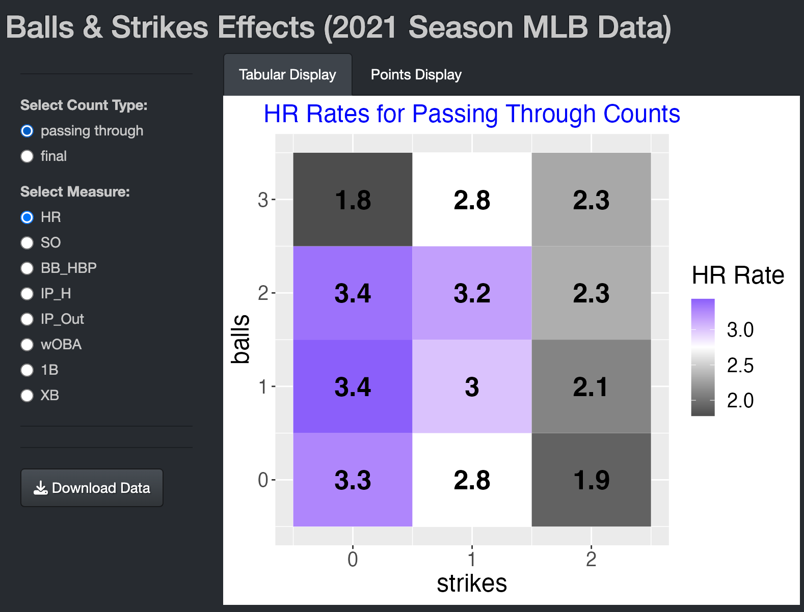
The Points Display displays these home run rates using a graphical format where the rate is graphed as a function of the pitch number and labeled with the count.
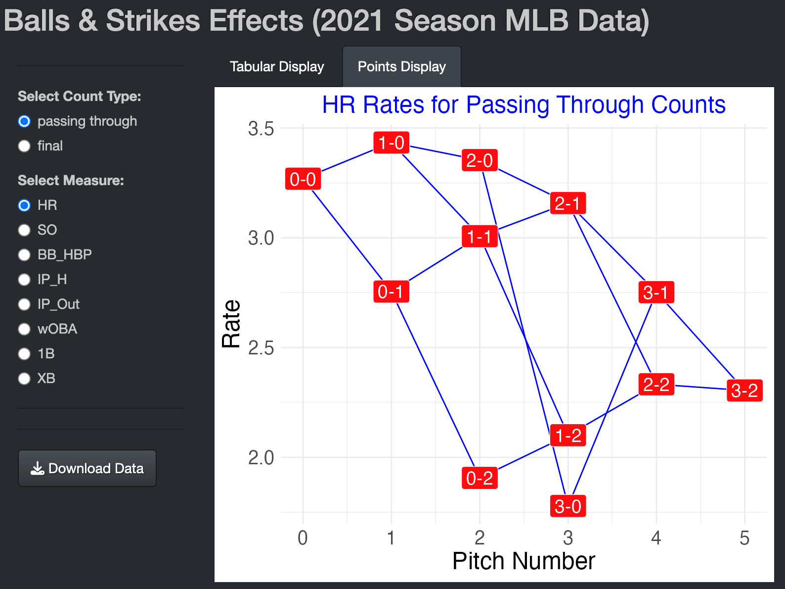
BerksonBA
Introduction
This app illustrates Berkson’s Paradox which might be better called the Selection-Distortion Effect. Two variables may appear to have some type of association. But when we select a portion of the data, the selected data may have a different association pattern. In other words, the pattern of association is distorted by the selection mechanism.
Using the BerksonBA App
In this app, we focus on data from the 2019 season, consider all hitters with at least 100 at-bats, and select hitters with at least a 0.200 batting average. We see a scatterplot of the in-play rate (1 - SO / AB) and the batting average on balls on contact (BACON) (H / (AB - SO)). We see a slight negative correlation of -0.37.
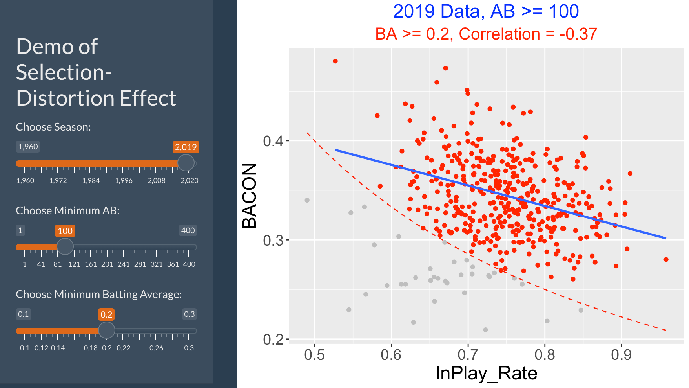
Now change the minimum batting average to 0.270. The app shows the selected points – there is a stronger association pattern and the correlation value is now -0.76. So we have changed the association pattern by selecting the better hitters.
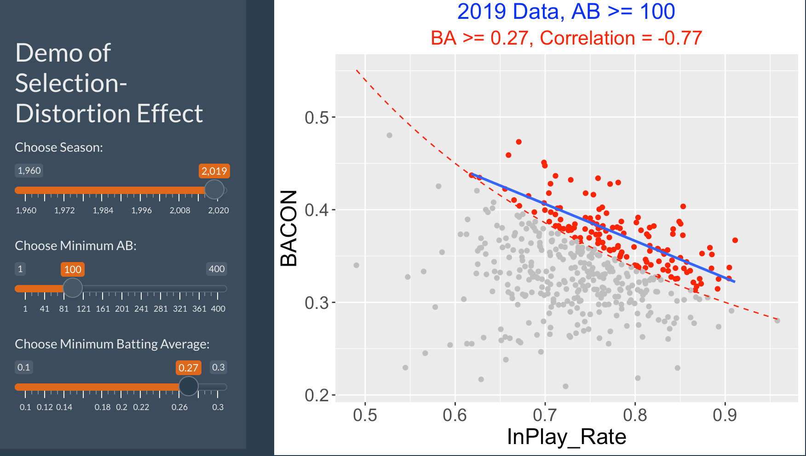
Things to Try
Try to show this paradox by selecting data from a different season. Do you see a similar phenomena when you select players with at least a minimum BA?
One can observe a similar paradox by selecting players on the basis of the number of at-bats (AB). For a specific season, look at all hitters with say at least 50 at-bats. Does the association pattern between In-Play Rate and BACON change when you select players with at least 400 at-bats? Can you explain why the association pattern has or has not changed?
Blog Post
I describe this phenomenon in the following post:
https://baseballwithr.wordpress.com/2021/09/20/selection-distortion-effect-in-baseball/
BR_Batting_History
Introduction
This app displays a measure of batting performance over seasons. The data are season averages as reported on the Baseball-Reference website.
Using the BR_Batting_History App
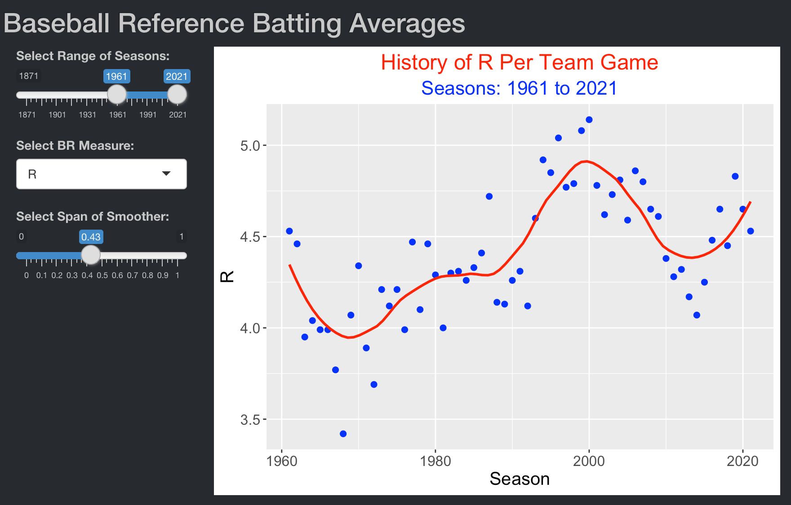
One selects a range of seasons of interest and selects a batting measure from the measures used on the Baseball-Reference site. In this example, I select the period from 1961 through 2021 and runs per game per team as the measure. The app displays a scatterplot of the measure against season where a loess smoothing curve is used to show the basic pattern. One can change the smoother span on the slider to match up with the observed data.
Similar Apps
BR_Pitching_History is a similar Shiny app to display a specific pitching average over seasons using Baseball Reference data.
BrushingBattingLocations
Introduction
This app illustrates displaying batted ball locations for a hitter when one can filter by launch angle and exit velocity.
Using the BrushingBattingLocations App
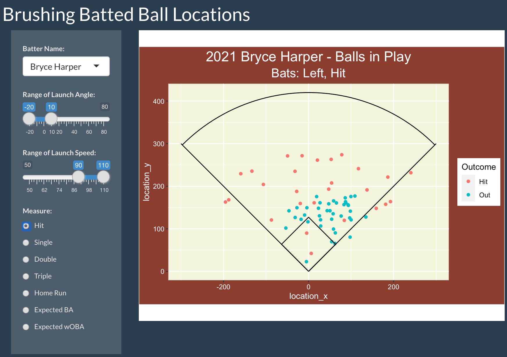
In this app, one selects a 2021 hitter of interest and ranges of values of launch angle and exit velocity. In addition, one choose a measure – the color of the plotted point will correspond to this measure. In this example, I select Bryce Harper, consider hard-hit ground balls where the launch angle is between -20 and 10 degrees and the exit velocity is between 90 and 110 mph, and choose Hit to be the measure. One sees a graph of the field locations of these batted balls where the color indicates a Hit or Out.
By brushing over the batted ball graph, one gets additional measures. In the example below, I select all of the hard-hit ground balls where the ball is hit to the pull side. The table at the bottom shows that Harper is 15 / 46 = 0.326 on these particular batted balls.
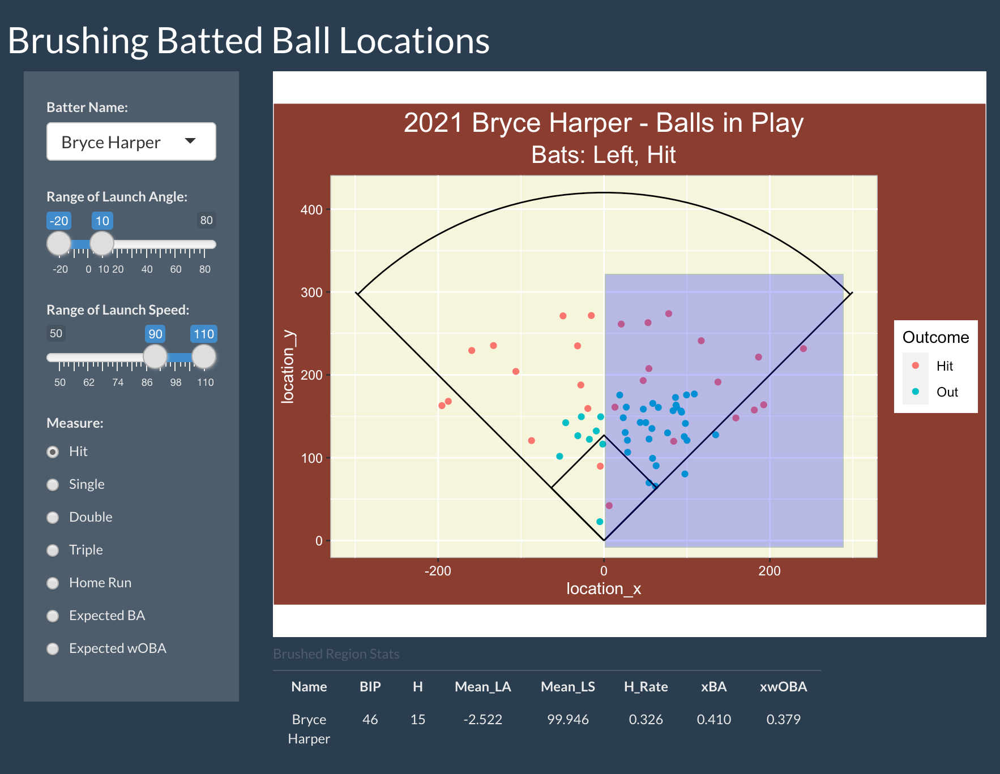
BrushingCalledPitches
Introduction
Umpires who call balls and strikes tend to favor the home team. This app allows one to measure the home team bias using called pitch data from the 2022 season.
Using the BrushingCalledPitches App
In this app, you choose the arm of the pitcher (R or L) and the batting side (R or L). In this example, we are considering called pitches by right-arm pitchers to right-handed batters.
The display shows the location of a sample of called pitches where the color of the point corresponds to the called outcome (ball or strike).
Use the mouse to select a region of points – here I select a region at the bottom of the zone. The table below the figure gives the pitch count and number of balls and strikes for the top of the inning (when the visiting team is batting) and the bottom of the inning (when the home team is batting). The home team bias is the difference in visiting team and home team strike percentages. The coordinates of the selected rectangle and the home bias value are displayed on the left. Here the bias is positive which is an advantage for the home team.
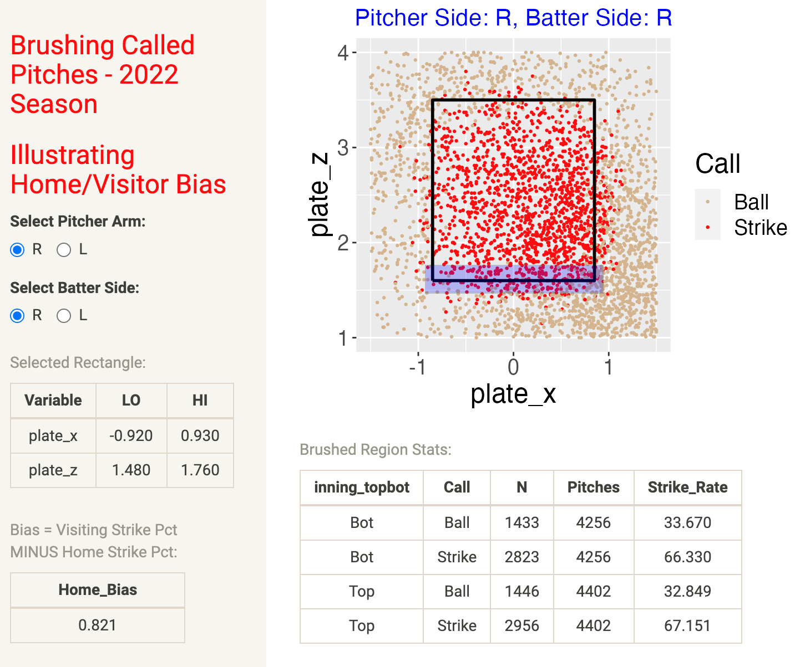
BrushingInPlay3
Introduction
This app displays linked scatter plots of launch variables, zone locations, and batted-ball locations for balls put into play for a specific 2021 hitter.
Using the BrushingInPlay3 App
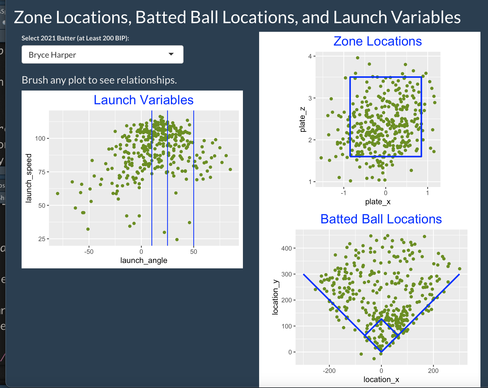
One selects a 2021 hitter of interest. Three plots are displayed.
A scatterplot of the launch angle and exit velocity for all balls put into play.
A scatterplot of the zone locations of the corresponding pitches of these batted balls.
The batted ball locations of these batted balls.
By brushing any of these plots, one can see the relationship between these sets of variables. For example, from the launch variable plot, I brush below a rectangle of the pop-ups where the launch angle exceeds 50 degrees. From looking at the zone location plot, we see that these pop-ups come from pitches located at different parts about the zone. Looking at the batted ball location graph and knowing that Harper is a left-handed hitter, we see that these pop-ups tend to be hit in the opposite (left) size of the field.
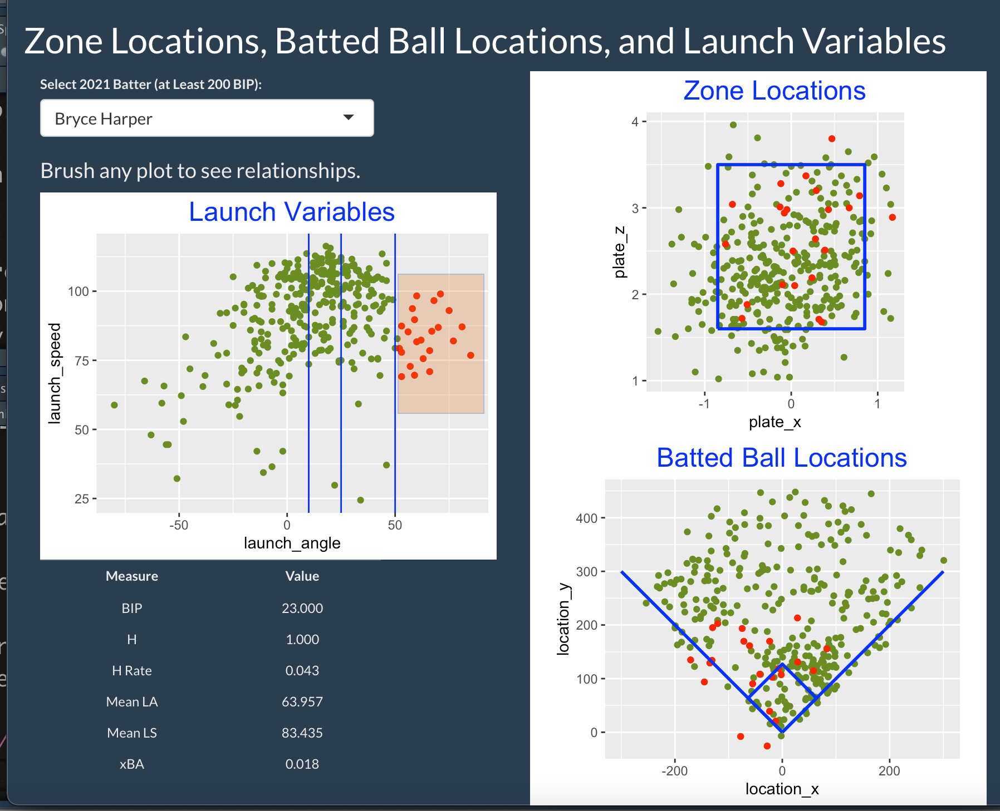
Blog Post
In this post, I describe the use of the BrushingInPlay3 app:
https://baseballwithr.wordpress.com/2021/12/13/linking-pitch-location-spray-chart-and-launch-variables/
BrushingInPlay3a
Introduction
This app displays linked scatter plots of launch variables, zone locations, and batted-ball locations for balls put into play for a specific 2021 hitter.
Using the BrushingInPlay3a App
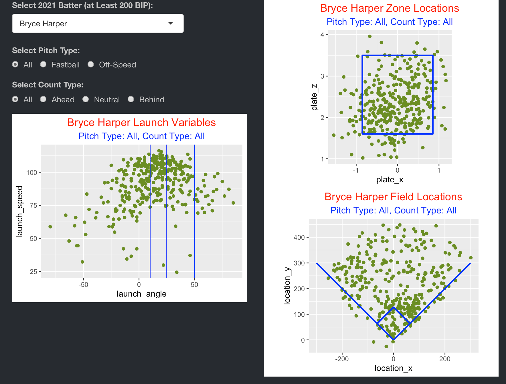
One selects a 2021 hitter of interest. Also one can choose a pitch type (either All, Fastball or Off-Speed) and count type (either All, Ahead, Neutral or Behind). Three plots are displayed.
A scatterplot of the launch angle and exit velocity for all balls put into play.
A scatterplot of the zone locations of the corresponding pitches of these batted balls.
The batted ball locations of these batted balls.
By brushing any of these plots, one can see the relationship between these sets of variables. In this example I am considering all batted balls (all pitch types and all counts). From the zone location plot, I brush below a rectangle in the lower portion of the zone. Looking at the launch variable plot, we see that many of these low pitches are hit with exit velocities exceeding 100 mph. Looking at the batted ball location graph, we see that the infield hit balls are hit to the pull side, and outfield hit balls are hit to all fields.
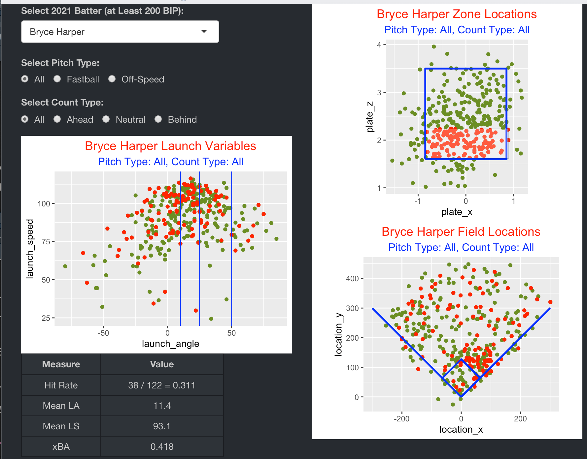
BrushingZone
Introduction
This app illustrates the use of brushing to display hitting measures for a specific 2019 batter over selected regions of the zone.
Using the BrushingZone App
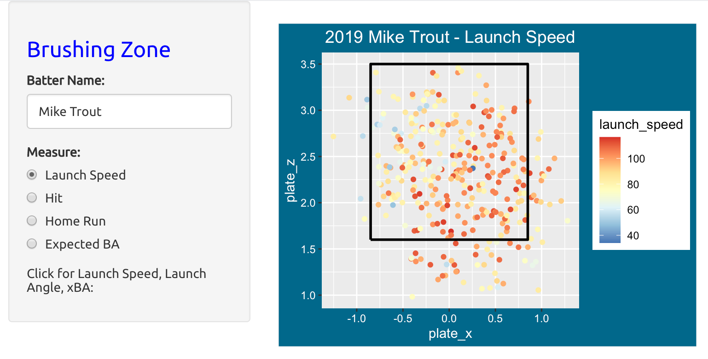
To use this app, one enters in the full name of a 2019 hitter of interest – in this example, I am entering in Mike Trout. Then you indicate what measure to focus on.
If you select Hit or Home Run, you will see a scatterplot of all balls put in play where the color of the point indicates success or failure. If you choose a continuous measure such as Launch Speed or Expected BA, you will see colored points where higher values are red and lower values are blue.
One brushes over the scatterplot by using the mouse to select a region over the zone. For example, if the measure is Launch Speed and I select the lower-right section inside the zone, I see that in this region …
He has 40 hits out of 89 balls in play (BIP) for a batting average of 40/89 = 0.449.
He has 15 home runs out of 819 BIP for a HR rate of 0.169.
The mean launch speed over this region is 96.904 mph.
If you click on an individual point, you will see the launch speed, launch angle and expected batting average for that particular BIP.
Things to Try
Think of another hitter of interest who played during the 2019 season. By choosing different measures and brushing over different areas about the zone, discover the areas about the zone where the hitter was successful and the areas about the zone where the hit struggled.
For this same hitter, by clicking on particular points, find several locations about the zone where the hitter hit the ball relatively hard.
Blog Post
This blog post describes the use of the BrushingZone app:
https://baseballwithr.wordpress.com/2021/02/15/two-shiny-brushing-apps/
CareerTrajectoryBatting
Introduction
This app allows one to compare the career trajectories of two contemporary hitters of interest.
Using the CareerTrajectoryBatting App
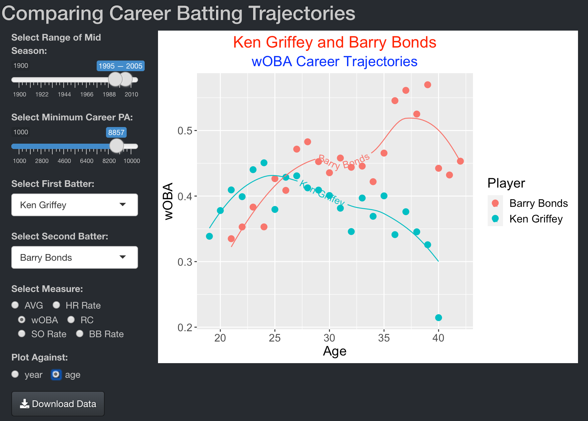
One first selects the range of mid-season values and minimum number of plate appearances. The drop-down menus will contain the names of the players who satisfy those criteria. One uses the menus to select two hitters, one chooses a measure of interest from the radio buttons, and select to graph the measure against season or age.
In this example, I decide on the mid-season values 1995 to 2005 and 8857 minimum plate appearances. I choose Junior Griffey and Barry Bonds and decide to graph their season wOBA values against age.
Smooth loess fits are used to summarize the trajectories of the two players. Ken Griffey peaked relatively early (about age 25) and gradually declined in wOBA until his retirement at age 40. Bonds increased in wOBA until the early 30’s and then exhibited an unusual increase in wOBA in his middle 30’s.
Blog Post
In these blog posts, I provide illustrations of the CareerTrajectoryBatting app.
https://baseballwithr.wordpress.com/2022/01/02/shiny-app-to-compare-career-batting-trajectories/
https://baseballwithr.wordpress.com/2022/01/10/three-shiny-career-trajectory-apps-with-labeled-smooths/
CareerTrajectoryBattingMany
Introduction
This app allows for the comparison of many batting career trajectories of hitters who satisfy particular criteria.
Using the CareerTrajectoryBattingMany App
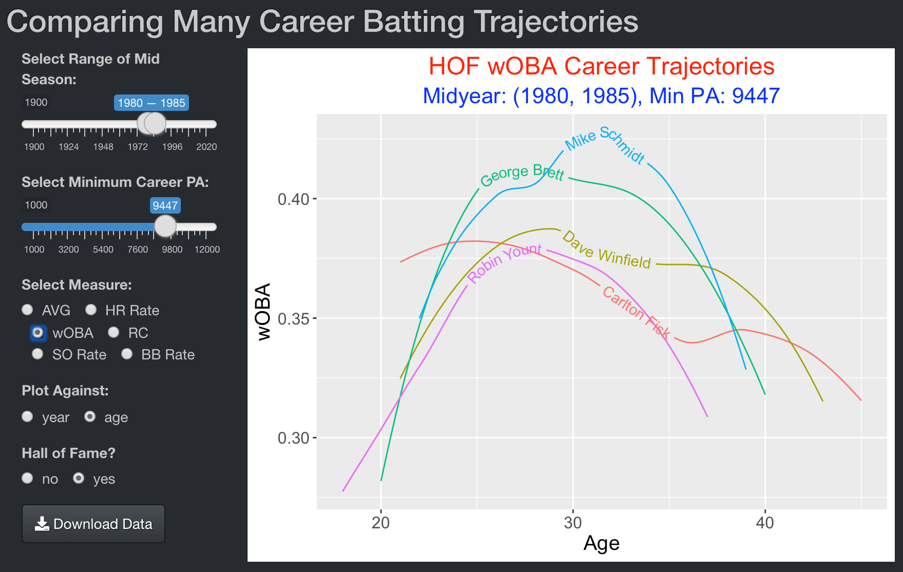
One first selects a range of midseason values and the minimum number of career plate appearances. The app will plot trajectories of the hitters who satisfy these criteria. One also chooses a measure (among AVG, HR Rate, wOBA, RC, SO Rate, BB Rate) and whether to plot against season or age. One can decide to restrict the search to Hall of Fame (HOF) members by selecting the Hall of Fame? “yes” button.
In this example, I choose the midseason values 1980 to 1985 and 9447 plate appearances. I decide on the wOBA measure, choose to plot against age, and restrict to HOF members.
The graph displays the smoothed career trajectories of the five hitters (Mike Schmidt, George Brett, Dave Winfield, Robin Yount, Carleton Fisk) who satisfy these conditions.
ExpectedBA
Introduction
This app displays the counts of balls in play, hits, and batting average over regions of the (launch angle, launch speed) space.
Using the ExpectedBA App
One first selects a range of values of launch angle and range of values of launch speed and the step sizes for both variables. These inputs will define the bins of values of the two launch variables. In addition, one chooses if one wishes to view the in-play counts (“In-Play”), the hit counts (“H”) or the batting averages (“BA”).
In this example, I choose the in-play counts (“In-Play”):
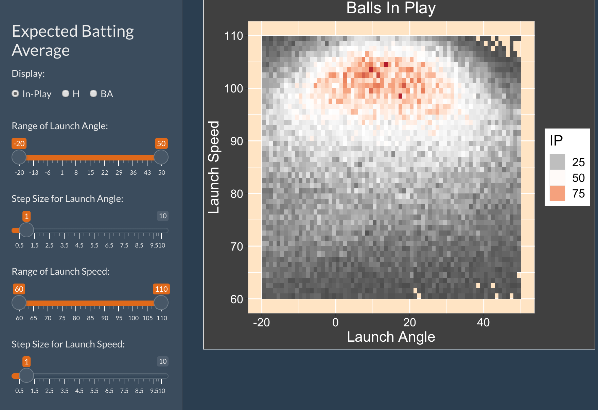
The graph displays a tile graph of the in-play counts over the launch variables. It appears that most balls in play occur when the launch angle is between 0 and 40 degrees and the launch speed is between 95 to 105 mph.
Displaying Hits
By choosing the hits option (“H”), one sees the counts of hits over the launch variables.
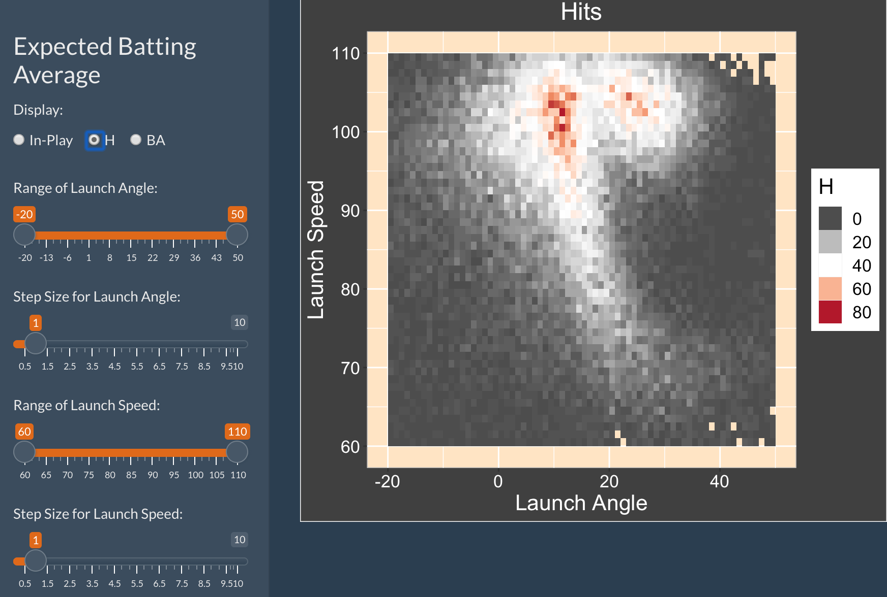
One sees an interesting pattern – hits are clustered in two regions for high launch speeds (the right-most region correspond to home runs). In addition, there is a thin long hit region in the middle of the plot corresponding to line drive.
Displaying Batting Averages
By choosing the batting average option (“BA”), one sees the in-play batting average over the launch variables. This clearly shows the home run region and the line drives that tend to result in hits.
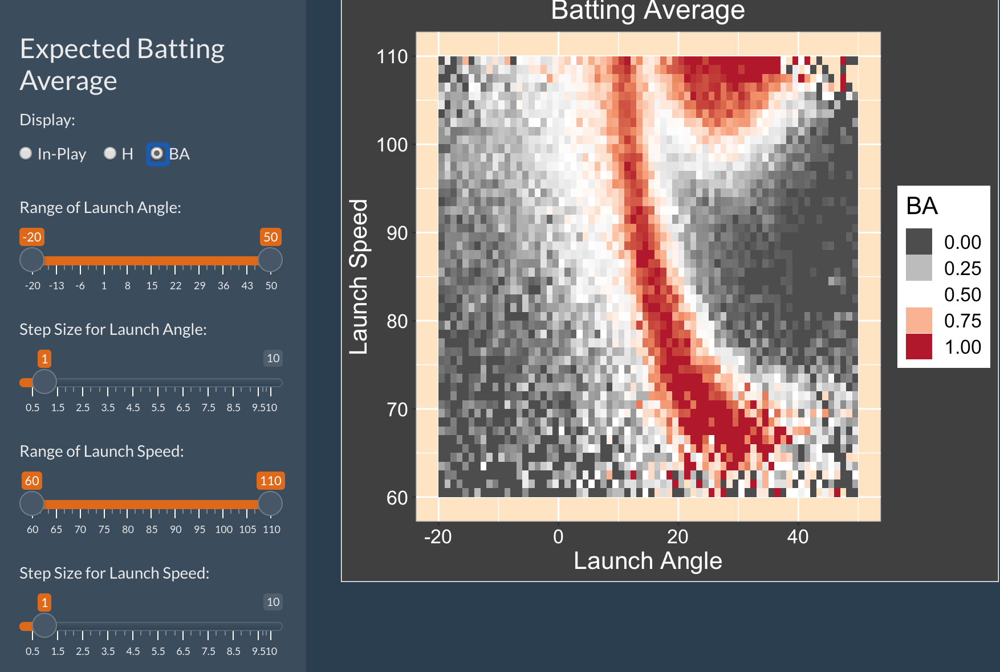
Similar Apps
The ExpectedHR and ExpectedwOBA apps have a simlar purpose – they show respectively the in-play home rates and the wOBA values over the launch variable space.
FanGraphsBatting
Introduction
This app allows for the comparison of many batting career trajectories of hitters who satisfy particular criteria. The data and measures are taken from the FanGraphs website.
Using the FanGraphsBatting App
One first selects a range of midseason values and the minimum number of career plate appearances. The app will plot trajectories of the hitters who satisfy these criteria. One also chooses a FanGraphs measure from the dropdown menu and whether to plot against season or age. One can decide to restrict the search to Hall of Fame (HOF) members by selecting the Hall of Fame? “yes” button.
In this example, I choose the midseason values 1995 to 2005 and 12000 minimum plate appearances. I decide on the WAR measure, choose to plot against age, and don’t restrict to HOF members.
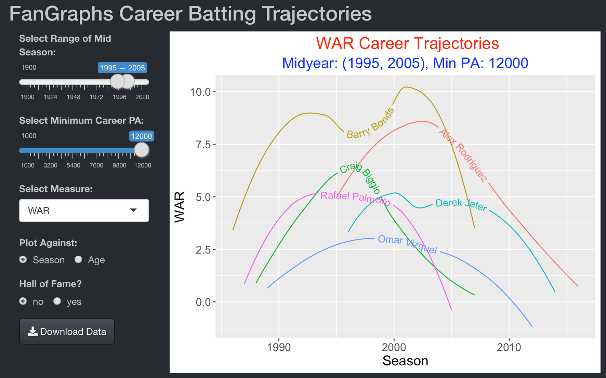
The graph displays smoothed WAR career trajectories of the six players who satisfy this criteria. With respect to WAR, Barry Bonds and Alex Rodriguez are the dominant hitters in this group.
Blog Posts
In this blog post, I describe the construction of this FanGraphsBatting app:
https://baseballwithr.wordpress.com/2022/01/17/a-fangraphs-career-trajectory-graph/
In a follow-up blog post, I illustrate the use of FanGraphsBatting to compare David Ortiz with six contemporary players.
https://baseballwithr.wordpress.com/2022/01/24/comparing-david-ortiz-with-six-contemporaries/
Similar Apps
FanGraphsPitching is a similar app to compare the career trajectories of a group of pitchers satisfying specific criteria using FanGraphs data.
HomeRunPaths
Introduction
This app displays the career home run path for a selected group of home run hitters. It displays the cumulative home run count as a function of each player’s age. In addition, it summarizes the home run paths with lines and shows residuals (deviations) from these lines.
Using the HomeRunPaths App
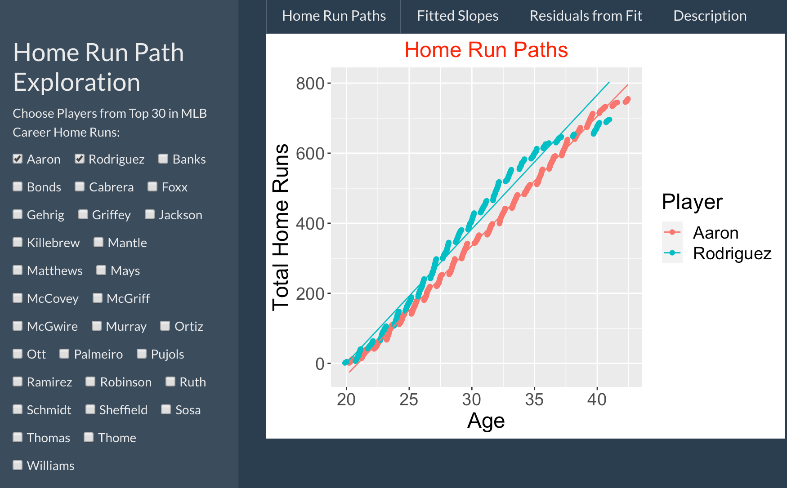
The app displays the last names of the top 30 hitters with respect to career home runs. One can select one or more players to compare, although the graphical comparison is easier with a small number of players. The HomeRunPaths app displays the home run paths and associated fitted lines.
The Fitted Slopes tab displays a scatterplot of the path slopes and the home run career totals.

The Residuals from Fit tab displays smoothed residuals from the line fits.
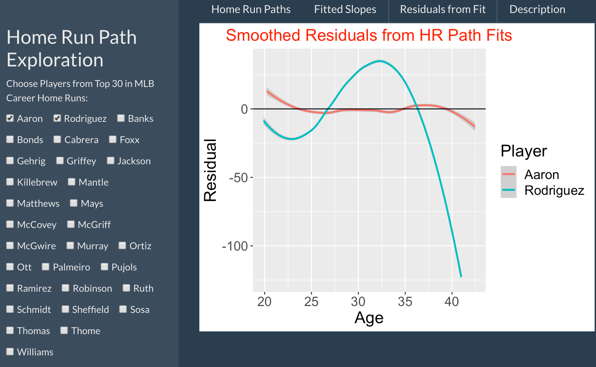
Comparing Hank Aaron and Alex Rodriguez, we see …
Rodriguez had a greater home run count than Aaron at practically all ages, but Rodriguez’s home run productivity slowed down at age 36 and Aaron ultimately had the higher career total.
Rodriguez had a higher slope estimate than Aaron.
Looking at the smoothed residuals, Aaron appeared to remarkably consistent in his pattern of hitting home runs. In contrast, Rodriguez hit home runs at a high rates between ages 30-35 and his home run productivity dropped in his last years of his career.
Things to Try
Think of particular groups of 2 or 3 players to comopare with respect to home run hitting. For each comparison, make general comments about
- the differences in home run paths
- the differences in slopes
- the residuals from the straight-line fits
Blog Post
I describe career home run paths in this post:
https://baseballwithr.wordpress.com/2021/09/13/career-home-run-paths/
InPlayRates
Introduction
This app is designed to compare in-play hit rates for two seasons across values of launch angle and exit velocity.
Using the InPlayRates App
First one selects the two Statcast seasons to compare – here we are comparing the 2019 and 2021 seasons. Next we select what type of in-play event to consider – it is either H (hit), 1B (single), 2B (double), 3B (triple), HR (home run), or H no HR (hits excluding home runs). The (exit velocity, launch angle) space is divided into 30 subrectangles. Under the “PctSeason1” tab, the 2019 hit percentages for all subrectangles are displayed.
If one chooses the “PctSeason2” tab, one will see the hit percentages displayed for the second (2021) season.
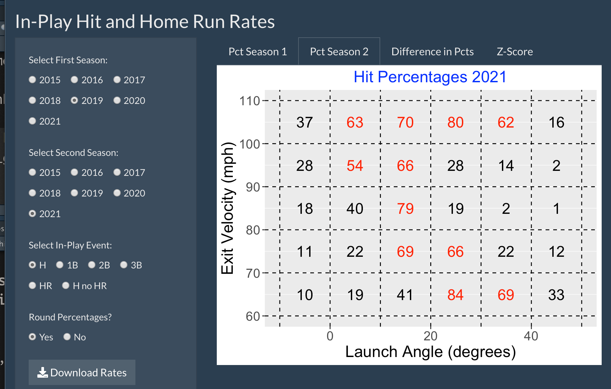
The “Difference in Pcts” tab will show the difference in percentages (2nd season minus 1st season) for all subrectangles.
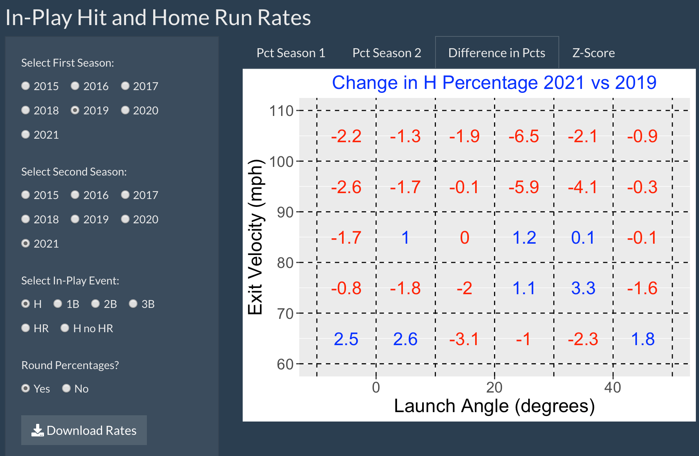
The “Z-Score” tab displays the corresponding Z statistics for measuring the significance of the differences in percentages for all subrectangles.

InPlayRatesSpray
Introduction
This app explores in-play hit rates as a function of three launch condition variables – exit velocity, launch angle and spray angle.
Using the InPlayRatesSpray App
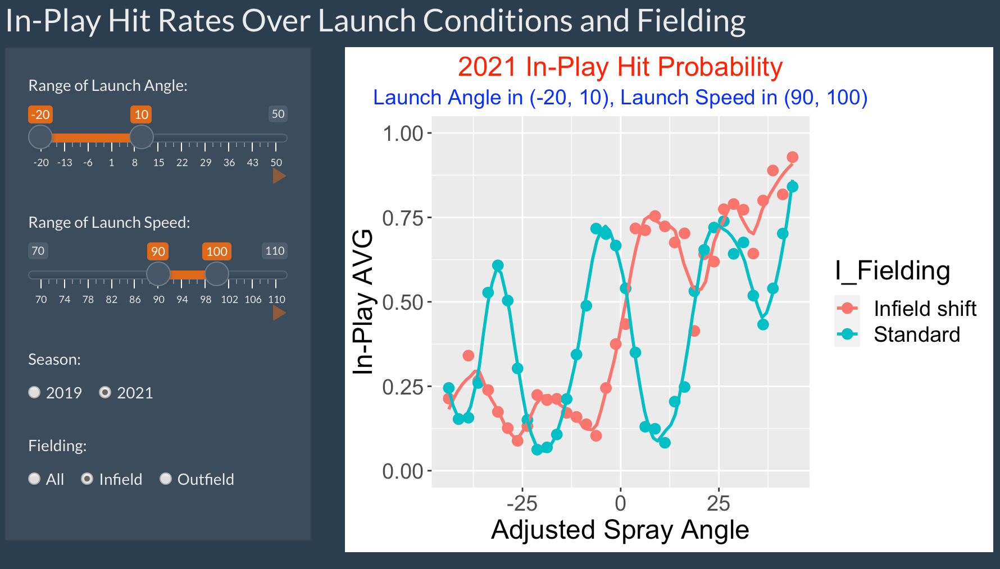
There are four inputs to this app:
- Range of values of launch angle
- Range of values of exit velocity
- Season (either 2019 or 2021)
- Type of fielding (all, infield or outfield)
Here I focus on ground balls (the launch angle is between -20 and 10 degrees) that are hard hit (exit velocity between 90 and 100 mph. I focus on the 2021 infield and want to compare infield defenses.
The graph shows a display of the in-play rate as a function of the adjusted spray angle (a negative value indicates a pulled batted ball and a positive value indicates a batted ball hit to the opposite side). There are separate curves for the two types of infield defenses, infield shift and standard.
Generally, we see that infield shift (compared with standard fielding) will reduce the hit rates for balls that are pulled, but will increase the hit rates for balls hit to the opposite side.
InPlayRatesSpray2
Introduction
This app explores in-play hit rates as a function of three launch condition variables (exit velocity, launch angle and spray angle) for the 2019 and 2021 seasons.
Using the InPlayRatesSpray2 App
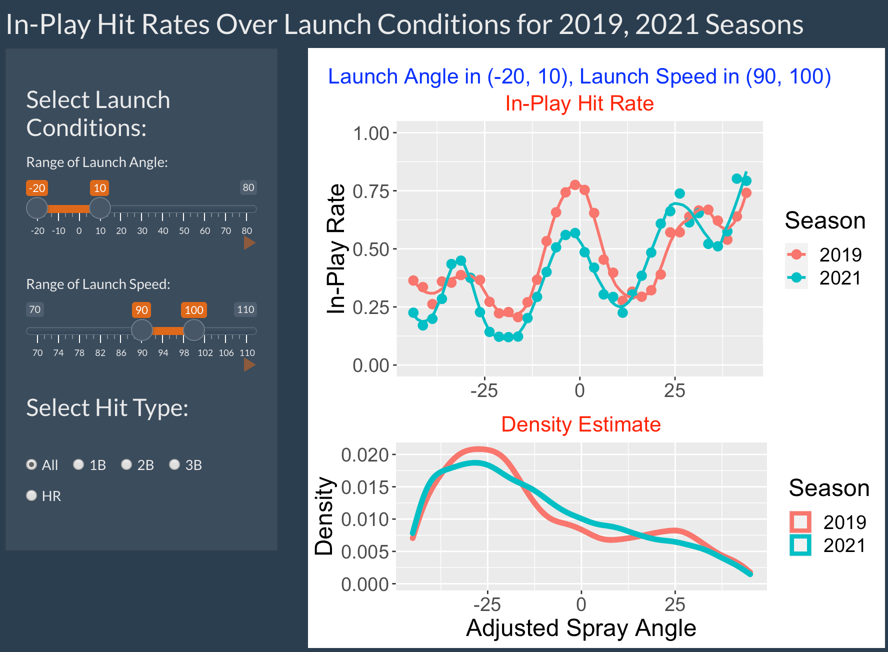
There are three inputs to this app:
- Range of values of launch angle
- Range of values of exit velocity
- The hit type (either all, 1B, 2B, 3B or HR)
Here I focus on ground balls (the launch angle is between -20 and 10 degrees) that are hard hit (exit velocity between 90 and 100 mph. I am considering all hit types.
The top graph shows a display of the in-play rate as a function of the adjusted spray angle (a negative value indicates a pulled batted ball and a positive value indicates a batted ball hit to the opposite side). There are separate curves for the 2019 and 2021 seasons. The bottom graph displays parallel density graphs of the adjusted spray angle for the two seasons.
Comparing the 2019 and 2021 seasons …
We see that generally the 2021 hit rates are smaller than the 2019 hit rates for pulled ground balls and balls hit to the opposite side smaller than 12 degrees. The differences are greatest for balls hit at -20 and 0 degrees.
The 2019 hit rates are smaller than the 2021 rates for opposite side ground balls between 12 and 22 degrees.
The bottom graph confirms that most of the ground balls are hit to the pull side.
Blog Post
In this post, I describe the use of the InPlayRatesSpray2 app:
https://baseballwithr.wordpress.com/2021/11/15/in-play-hit-rates-for-two-seasons-as-functions-of-launch-variables/
LocationValue
Introduction
This app displays pitch locations and pitch values over the zone for a selected pitch types for a single pitcher from the 2021 season.
Using the LocationValue App
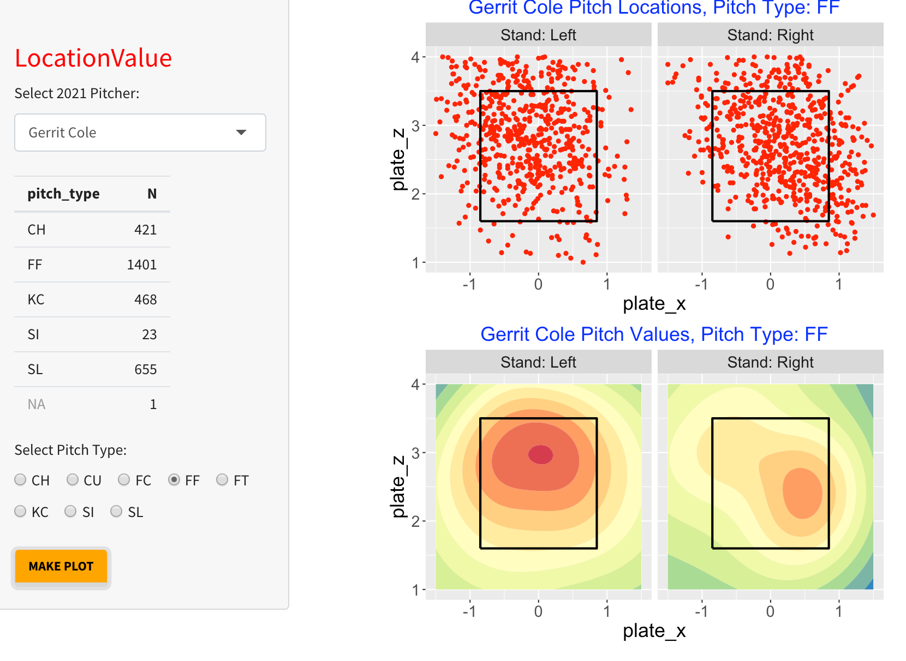
One selects a particular 2021 pitcher of interest. In addition, one selects a particular pitch type among CH (changeup), CU (curve ball), FC (cutter), FF (four-seam fastball), FT (two-seam fastball), KC (knuckle curve), SI (sinker), and SL (slider).
When one selects the pitcher, one will see a table of frequencies of the given pitcher. To get good displays of pitch value, we recommend that you select one of the pitcher’s most frequent pitch types.
When one presses the MAKE PLOT button, one sees two graphs. The top graph shows the locations of the pitches of the selected type against both left and right handed hitters. The bottom graph displays filled contour graphs of pitch value for the two batter sides for the selected pitch type. Large values of pitch values, colored red, favor the pitcher and small values, colored blue, favor the batter.
For the snapshot above, we are selecting Gerrit Cole and the four-seam fastball. Looking at the pitch location display, I see a general tendency for Cole to throw high and outside, both to left-handed and right-handed hitters. The pitch value display indicates that four-seam fastballs thrown high in the zone to left-handed hitters tend to have the highest positive pitch values favoring the pitcher.
To get alternative graphs, make button selections and press the MAKE PLOT button.
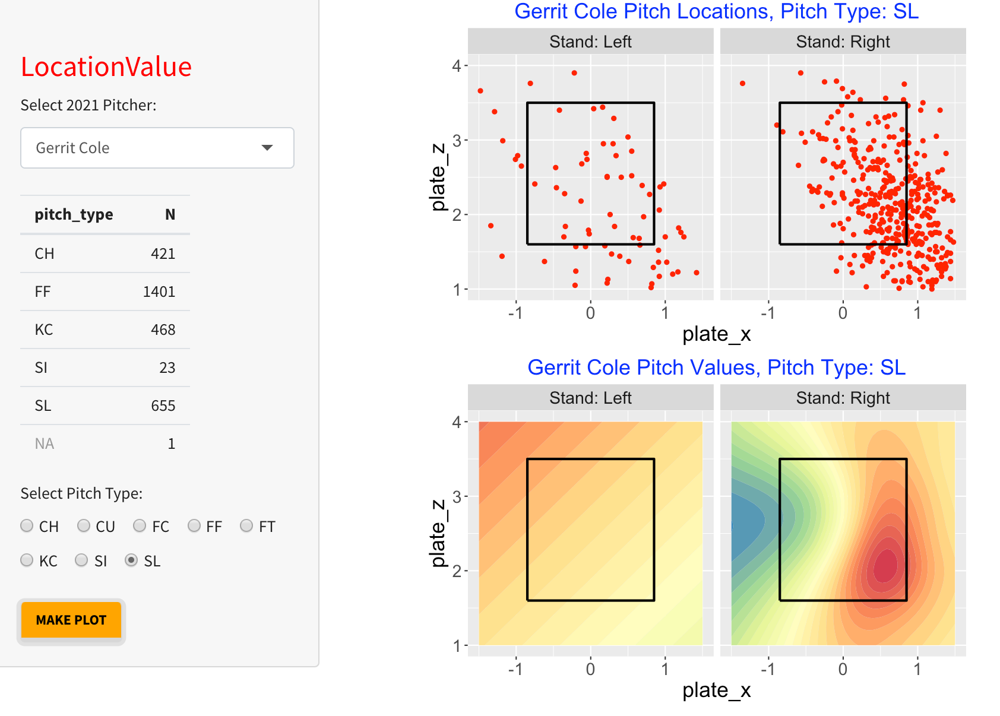
Here we again choose Gerrit Cole and choose the pitch type to be slider (SI). Note that Cole tends to throw the sider only to right-handed batters and the locations tend to be down and outside. Looking at the pitch value graph, note that the best pitch values (from the pitcher respective) tend to be in the lower-right region of the zone.
LogitHitRates
Introduction
This app focuses on understanding how an hit on a ball put in play depends on the launch conditions and comparing in-play hit rates between two Statcast seasons of interest.
Using the LogitHitRates App
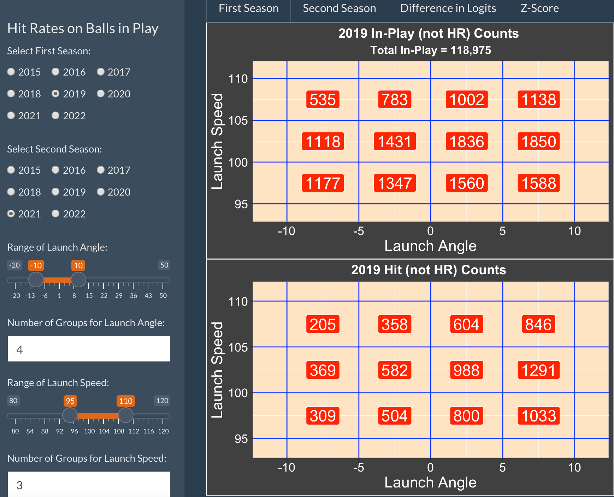
To use the app, one first choosing two Statcast seasons to compare – here we are choosing 2019 and 2021.
You select the range of Launch Angle and the number of subgroups to use within that range. Similarly, you choose the range of Launch Speed and the number of groups to use within that range. The launch angle/launch speed space is subdivided into rectangles defined by these inputs. Here we are choosing 4 groups for launch angle between -10 and 10 degrees (ground balls) and 3 groups for launch speed between 95 and 110 mph.
The First Season tab shows two tables. The 2019 In-Play Counts table displays the number of batted balls (not home runs) for each subregion of launch variables. The 2019 Hits Counts table displays the count of hits (not home runs) in each subregion.
If one selects the Second Season table, the in-play counts and hit counts are shown for each of the subregions for the 2021 season.
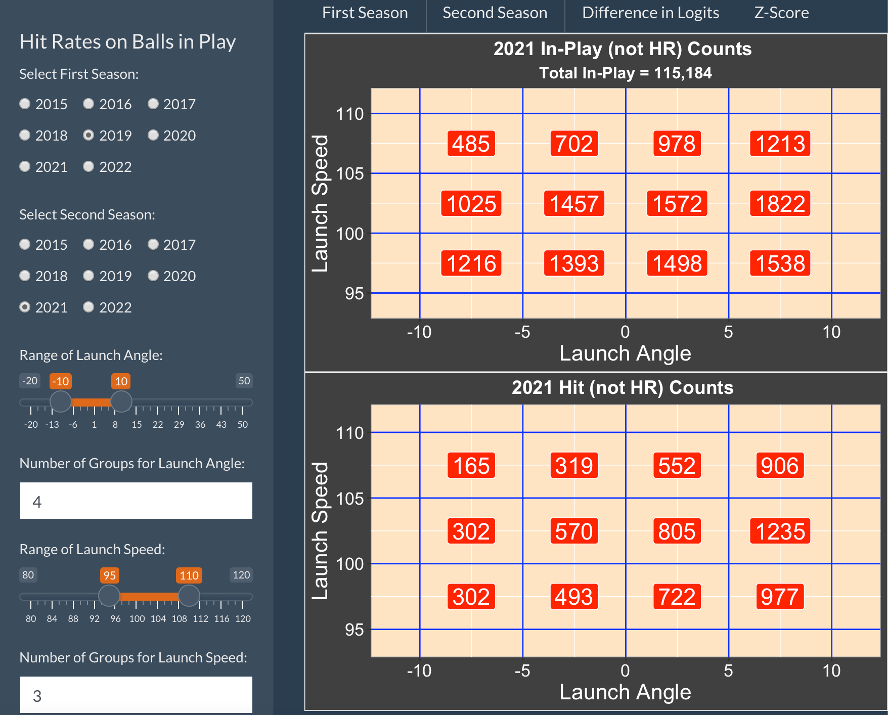
If one selects the Difference in Logits tab, the top graph displays the difference of logits of the in-play rates:
logit(rate_season2) - logit(rate_season1)
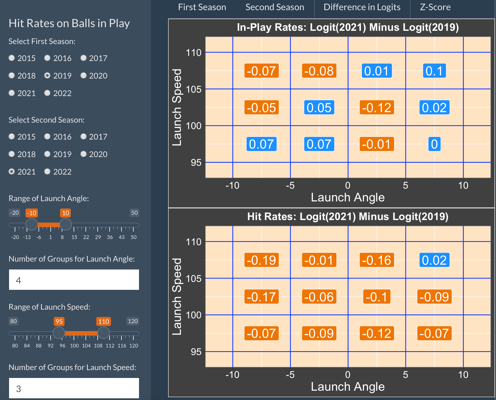
The bottom graph displays the difference of logits of hit rates:
logit(hit_rate_season2) - logit(hit_rate_season1)
By selecting the Z-Score tab, one compares the analogous Z-scores for assessing significance of this logit differences.
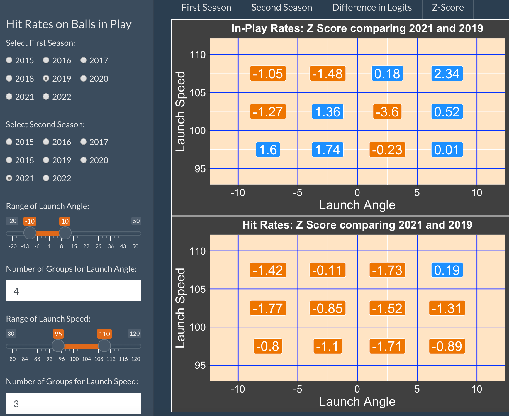
One can download all of the data used to create these graphs by selecting the Download Rates button.
We see from this comparison that the in-play hit rates have decreased from 2019 to 2021 for this region of batted balls. Since these batted balls are hard-hit ground balls, I suspect that this decrease is due to the fact that most MLB teams are employing defensive shift in the infield.
LogitHomeRunRates
Introduction
There have been remarkable changes in home run hitting over the Statcast era from 2015 through 2021. To hit a home run, a player needs to hit the ball hard (high launch velocity) with the right launch angle (typically between 20 and 40 degrees). This app is helpful for comparing launch conditions of batted balls and for comparing home run rates between two Statcast seasons of interest.
Using the LogitHomeRunRates App
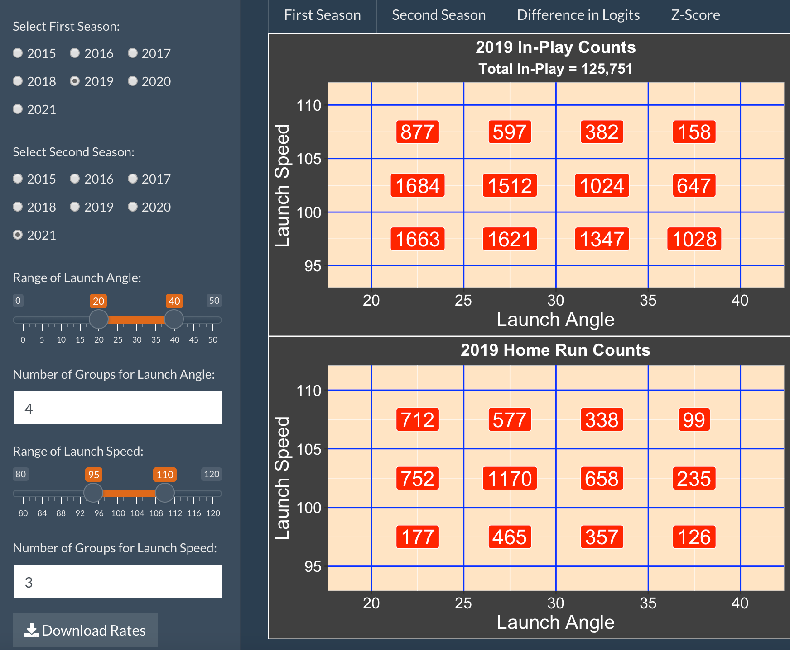
To use the app, one first choosing two Statcast seasons to compare – here we are choosing 2019 and 2021.
You select the range of Launch Angle and the number of subgroups to use within that range. Similarly, you choose the range of Launch Speed and the number of groups to use within that range. The launch angle/launch speed space is subdivided into rectangles defined by these inputs. Here we are choosing 4 groups for launch angle between 20 and 40 degrees and 3 groups for launch speed between 95 and 110 mph.
The First Season tab shows two tables. The 2019 In-Play Counts table displays the number of batted balls for each subregion of launch variables. The 2019 Home Run Counts table displays the count of home runs in each subregion.
If one selects the Second Season table, the in-play counts and home run counts are shown for each of the subregions for the 2021 season.
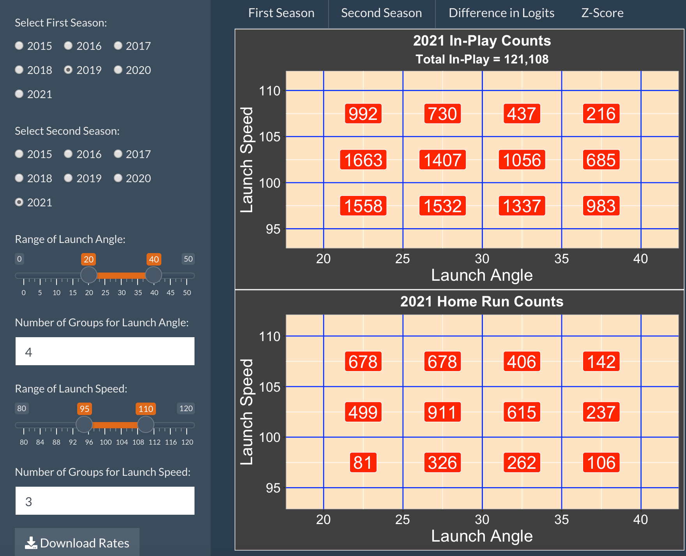
If one selects the Difference in Logits tab, the top graph displays the difference of logits of the in-play rates:
logit(rate_season2) - logit(rate_season1)
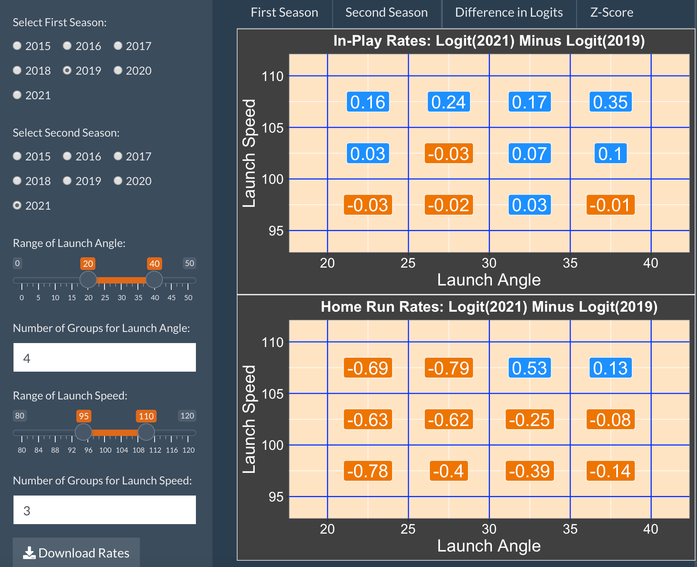
The bottom graph displays the difference of logits of home run rates:
logit(home_run_rate_season2) - logit(home_run_rate_season1)
By selecting the Z-Score tab, one compares the analogous Z-scores for assessing significance of this logit differences.
One can download all of the data used to create these graphs by selecting the Download Rates button.
We see from this comparison …
an increase (from 2019 to 2021) in balls hit with high velocity greater than 105 mph
a substantial decrease in home run rates (from 2019 to 2021) for balls hit in practically all regions of the launch condition space
Blog Post
The blog post at
https://baseballwithr.wordpress.com/2022/04/04/comparing-home-run-rates-for-two-seasons/
discusses the advantages of comparing rates using a logit reexpression.
Things to Try
See how these difference in logit rates change as you change the number of groups of launch angle and launch speed.
Repeat the comparison using a different selection of two seasons. By doing a number of comparisons, you can see general patterns of changes in home run hitting over the Statcast era.
Similar Apps
Two other apps explore home run rates:
HomeRunRates will explore in-play rates and home run rates over launch variables for a specific time interval over the Statcast era (2015 and later)
HomeRunCompare compares in-play rates and home run rates for two seasons of interest.
PitcherFourSeam
Introduction
This app illustrates how pitch measures for a particular pitcher vary across the strike zone. One selects a pitcher from the Statcast era (seasons 2015 through 2021) and a particular rate of interest. A graph shows how the rates of four-seam fastballs vary across subregions about the zone for right-handed and left-handed hitters.
Using the PitcherFourSeam App
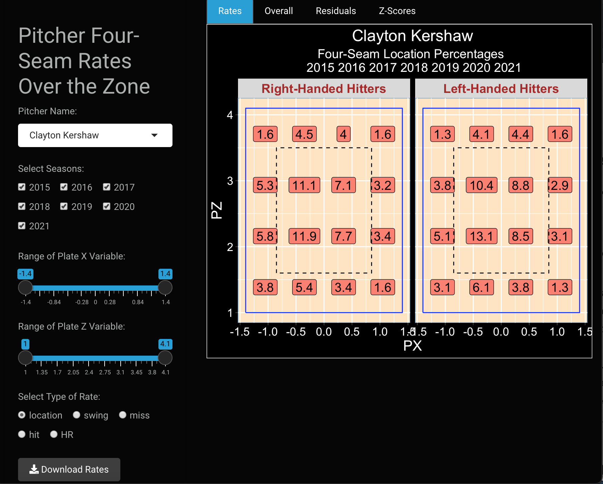
One starts by selecting the name of a particular pitcher, here Clayton Kershaw, who throws a large number of four-seam fastballs. One also selects the Statcast seasons of interest. In the app below, I have selected all Statcast seasons.
Next, one chooses the range of values of the Plate X (horizontal) and Plate Z (vertical) variables. One will consider 4 x 4 = 16 subregions defined by these range of Plate X and Plate Z variables. Below I consider values of Plate X between -1.4 and 1.4 and values of Plate Z between 1 and 4.1.
Next, one decides on the type of rate – there are five rate types.
location is the percentage of all four-seam fastballs that fall in each subregion
swing is the percentage of all four-seamers that are swung at in each region
miss is the percentage of all swung pitches that are missed
hit gives the percentage of all balls in play that are hits
HR gives the percentage of all balls in play that are home runs
Once a particular rate is chosen, then different measures are graphed across the zone.
The Rates tab displays a graph that shows the percentage of four-seamers in each of the 16 subregions. If hit is selected, the graph displays batting averages on balls in play for each subregion.
To help understand if the rates of the selected pitcher are high or low, the Overall tab gives the same rates for all pitchers in the selected Statcast seasons.
The Residuals tab displays the Pitcher Rate MINUS the Overall Rate
The Z-Score tab displays the standardized residuals – values of Z that are larger than 2 in absolute value represent meaningful differences between the pitcher and overall rates.
Things to Try
Select a pitcher who is know to have a good four-seam fastball. For example, Jacob DeGrom would be a good choice.
Enter the name of your pitcher and the Statcast seasons of interest. Some of the patterns in the rates may be more obvious if you select all of the Statcast seasons from 2015 through 2021.
Keep the Plate X and Plate Z variables at the default ranges so you can see the pattern of rates both inside and outside of the zone.
For each of the rate types (location, swing, miss, hit, HR), describe the pattern of rates that you see in the graphs. Compare the rates high and low in the zone, and compare the rate values inside (to the left for right-handed hitters) and outside (to the right for right-handed hitters). For left-handed hitters, inside and outside are respectively to the right and left.
By looking at the residuals and associated Z-scores, how does your pitcher differ from the general population of pitchers who throw four-seamers? Describe these differences for any rates that you think are meaningful.
Blog Post
Here is an illustration of the use of the PitcherFourSeam app in the following post:
https://baseballwithr.wordpress.com/2021/05/17/four-seamer-rates-for-josh-harder-and-mike-trout/
PitchLocation
Introduction
This app displays pitch locations over the zone for a group of 2019 pitchers for a selected pitch type, batter side, and counts.
Using the PitchLocation App

One selects from the dropdown menu a 2019 pitcher of interest. Using the button, one selects a batter side (either right or left), a type of pitch (either fastball or offspeed), and particular counts to compare.
In this example, we select Justin Verlander and we are interested in seeing the pitch locations of his fastballs to right-handed hitters on all 0, 1, and 2 strike counts.
When one presses the MAKE PLOT button, one sees highest density regions of pitch locations for each of the nine counts. The yellow region corresponds to the region that contains 50 percent of the pitch locations. What we see is that Verlander’s fastballs tend to fall in the middle of the zone, but he clearly throws them at a higher location on two-strike counts.
To get alternative graphs, make button selections and press the MAKE PLOT button.
By selecting off-speed and pressing MAKE PLOT, we see the pitch locations for Verlander’s off-speed pitches on the same counts to right-handed hitters.

We see a tendency for Verlander to throw his off-speed pitches low and outside. In addition, the locations tend to lower and more outside on two-strike counts.
PitchOutcome
Introduction
This app displays the pitch locations for a specific pitcher where the pitches are filtered by pitch type and pitch outcome.
Using the PitchOutcome App
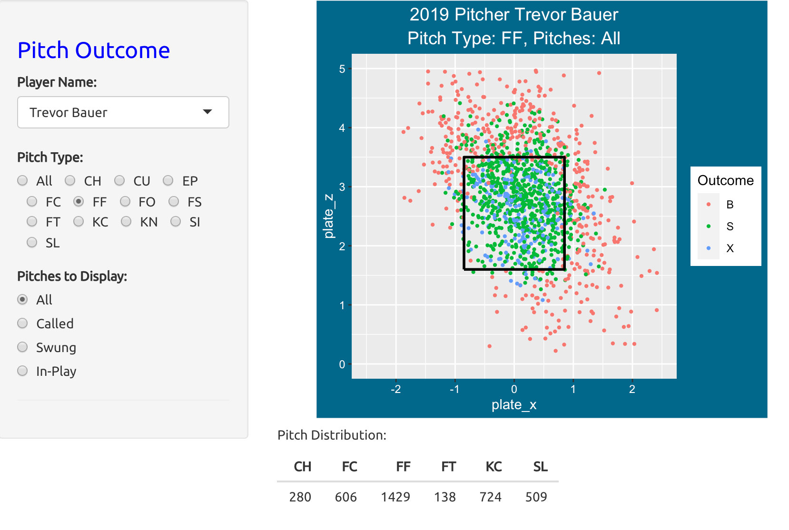
One begins by selecting a specific 2019 pitcher of interest. One selects a pitch type – it can be “All” or one of 12 possible pitch types. One can display the locations of “All” pitches, or only the ones that are Called, the ones where the batting swings, or the ones where the batter puts the ball in play. Here we are looking at the locations of all four-seam fastballs thrown by Trevor Bauer in the 2019 season. The color of the point corresponds to the outcome – either B (ball), S (strike) or X (in-play).
Here are the locations of the four-seamers where there is a call – the color of the plotting point indicates if the call was S (strike) or B (ball).
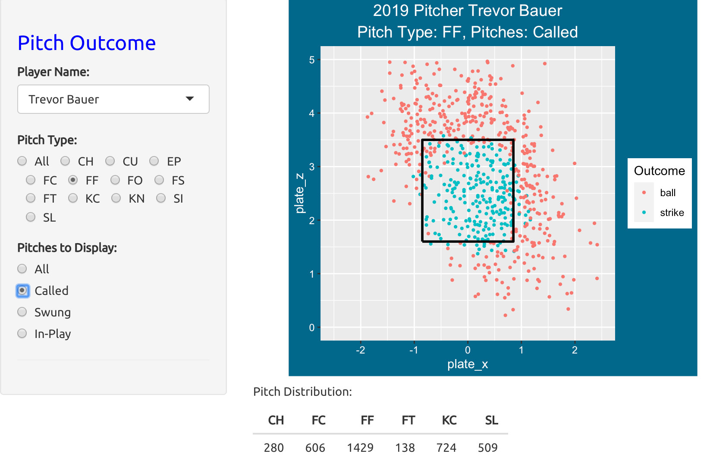
Here are the locations of the four-seamers where the batter swing. The color of the point corresponds to the swung outcome – foul, in-play, or miss.
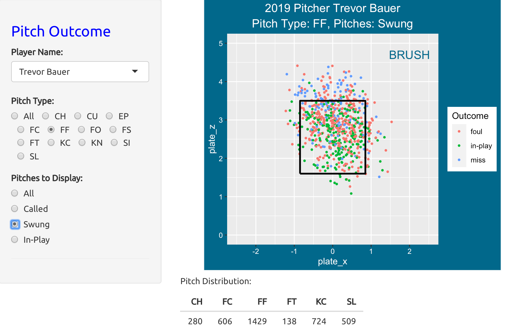
Here are the locations of the four-seamers put into play. The color of the point corresponds to the in-play outcome – either hit or out.
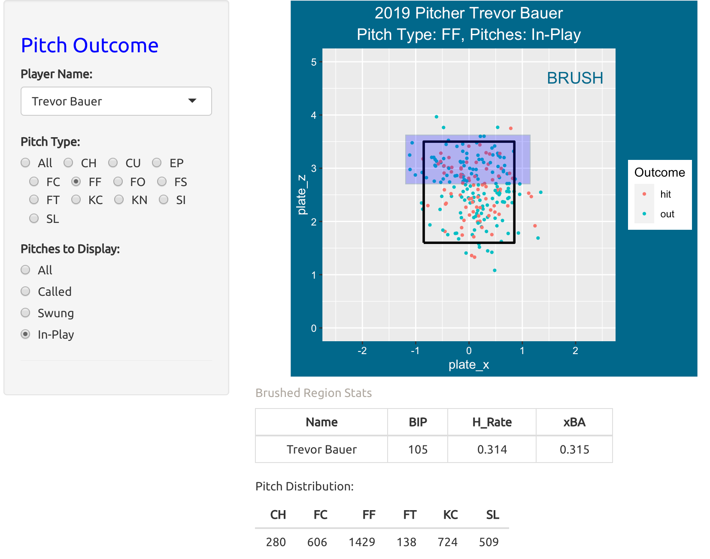
For in-play outcomes, one can brush the scatterplot to get additional information. Here I am brushing over points high in the zone – we see the batting average on these balls was .314.
PitchTypeCount
Introduction
This app displays pitch locations for a specific pitcher where one can compare locations of different pitch types and different counts.
Using the PitchTypeCount App

One selects a specific 2019 pitcher, a particular pitch type, and particular count. Here we are looking at the locations of Trevor Bauer’s four-seam fastballs (code FF) on a 0-0 count.
Now suppose we wish to compare the locations of Bauer’s four-seamers (FF), knuckle curveballs (KC) and his cutters (FC) over 0-0, 1-0 and 0-1 counts.
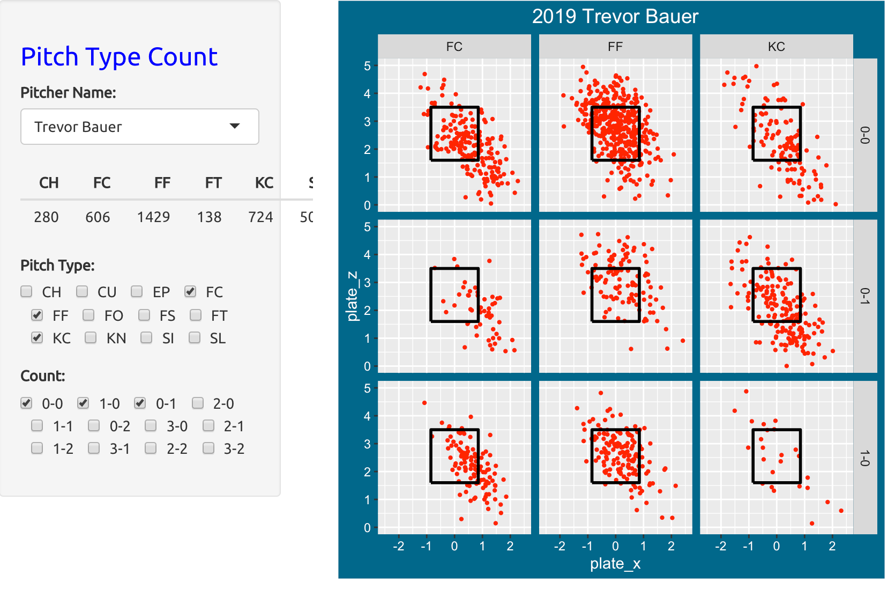
Compare the locations of Bauer’s pitches when he is ahead in the count (0-1) and when he is behind in the count (1-0). For a specific pitch type, his pitches are more likely to land within the zone when he is behind in the count.
PitchValue
Introduction
This app displays pitch values over the zone for all 2019 pitchers for a selected pitch type, pitcher side and batter side, and counts.
Using the PitchValue App
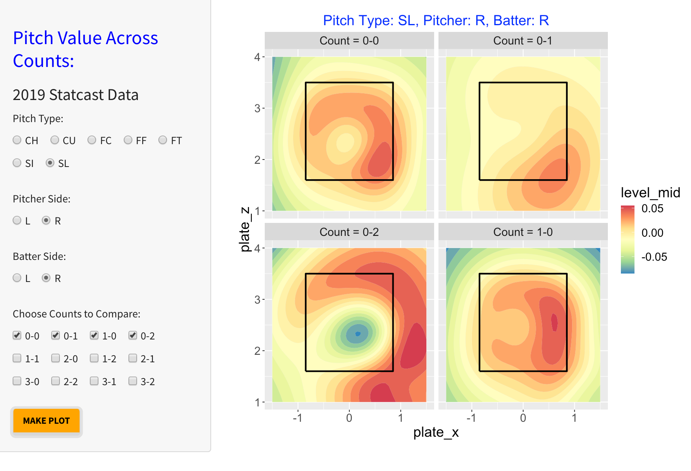
One selects a particular pitch type among CH (changeup), CU (curve ball), FC (cutter), FF (four-seam fastball), FT (two-seam fastball), SI (sinker), and SL (slider). Also one selects the side of the pitcher and the side of the batter. Last, one chooses one or more counts. In the example here, one is selecting Slider, both batter and pitcher side Right, and counts 0-0, 0-1, 1-0, and 1-1.
When one presses the MAKE PLOT button, one sees filled contour graphs of pitch value for each of the four counts. Large values of pitch values, colored red, favor the pitcher and small values, colored blue, favor the batter. The basic message is that right-handed pitchers are successful against right-handed batters with sliders thrown outside. On 0-2 counts, the most successful sliders are outside of the zone. In contrast, sliders thrown on an 0-2 count in the middle of the plate favor the hitter.
To get alternative graphs, make button selections and press the MAKE PLOT button.
Blog Posts
The blog post
https://baseballwithr.wordpress.com/2021/01/18/visualizations-of-pitch-values/
reviews the concept of pitch value and the post
https://baseballwithr.wordpress.com/2021/02/01/pitch-values-pitch-types-and-counts/
describes applications and interpretation of this particular Shiny app.
PredictHomeRuns
Introduction
This Shiny app illustrates prediction of home run rates. One uses a generalized additive model to predict the chance of a in-play home run as a smooth function of the launch variables. Then this model is used to predict the home run rates for future seasons of interest.
Using the PredictHomeRuns App
One first selects a Model Season – a model is fit predicting home run rates for a given month using a smooth function of the launch variables for that season.
Next one selects future seasons to predict, and a particular month of interest. Pressing the RUN button will implement the prediction.
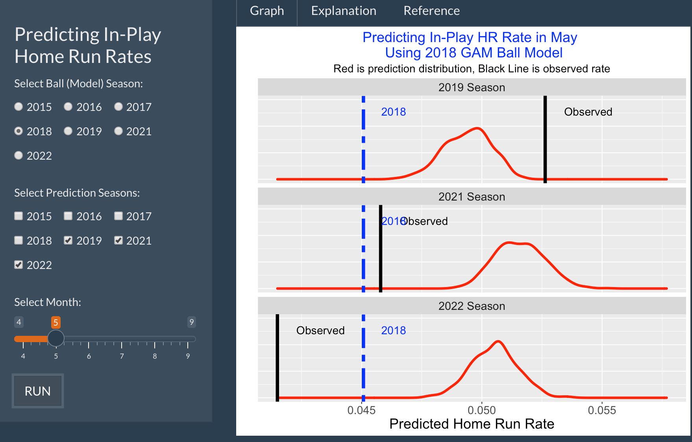
In this example, the Model Season is 2018, the month of interest is May, and one is predicting home run rates for Mays of 2019, 2021, and 2022.
The top graph shows the home run rate in May 2018 (blue line) and the observed home run rate in May 2019 (black line). The red curve displays the prediction distribution for the 2019 rate from the 2018 model.
The prediction distribution is above the 2018 rate – this indicates that the batters are hitting at high exit velocities and better launch angles in 2019. But the 2019 rate is higher than the prediction distribution. This indicates that the baseball has more carry in 2019 than in 2018. Similar intepretations can be made for the middle and bottom graphs
Article
In this blog post, Alan Nathan and I describe interpretation of this app:
Home Runs and Drag: An Early Look at the 2022 Season
https://blogs.fangraphs.com/home-runs-and-drag-an-early-look-at-the-2022-season/
PredictingBattingRates
Introduction
This app illustrates a prediction problem. One collects the batting rates for all players in the first part of the season, and one wishes to predict the players’ batting rates for the second part of the season. This app shows that multilevel model (so-called shrinkage) estimates are superior to the naive rate estimates in this prediction problem.
Using the PredictingBattingRates App
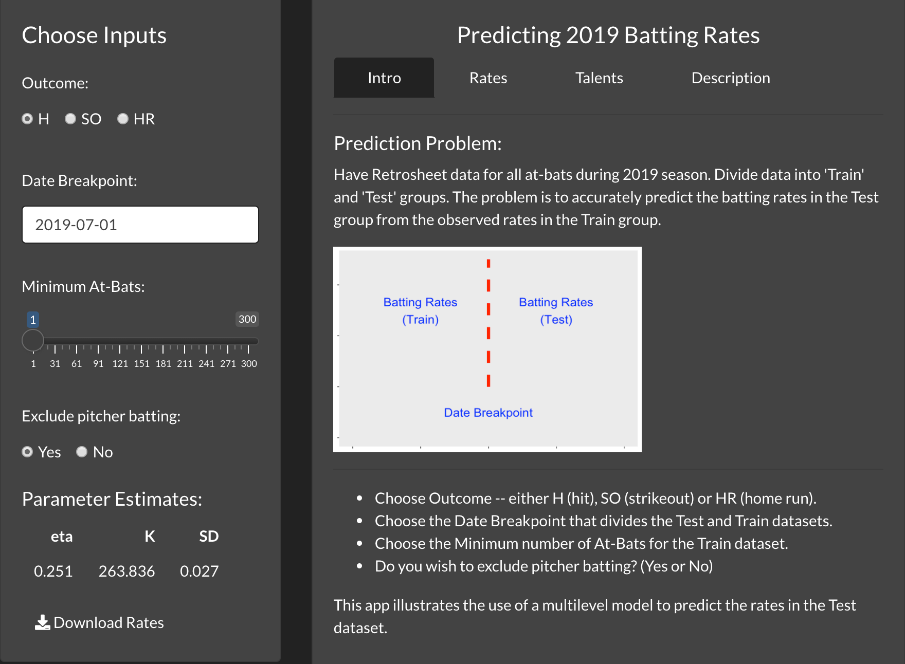
One first decides what type of rate to consider – either H (batting average), SO (strikeout rate), or HR (home run rate). One chooses the date during the 2019 season that will divide the two data parts. One chooses the minimum number of at-bats – only players who exceeds that minimum number of AB in the first part of the season will be included in the study. Does one wish to exclude batting data from pitchers – either select Yes or No.
Here we are considering all non-pitchers and select July 1, 2019 as the dividing point. The estimates of the multilevel model parameters eta and K are displayed. The estimate of eta is 0.251 which means that the predictions will shrink the observed rate towards 0.251. The estimate of the precision parameter K is 263.836 – this indicates how much the observed rate is shrunk towards 0.251.
By clicking on the Rates tab, one sees parallel dotplots of the observed and multilevel predictions. The bottom area displays the sum of squared prediction errors of both the observed and multilevel estimates – the sum of squared prediction errors is significantly smaller for the multilevel predictions.
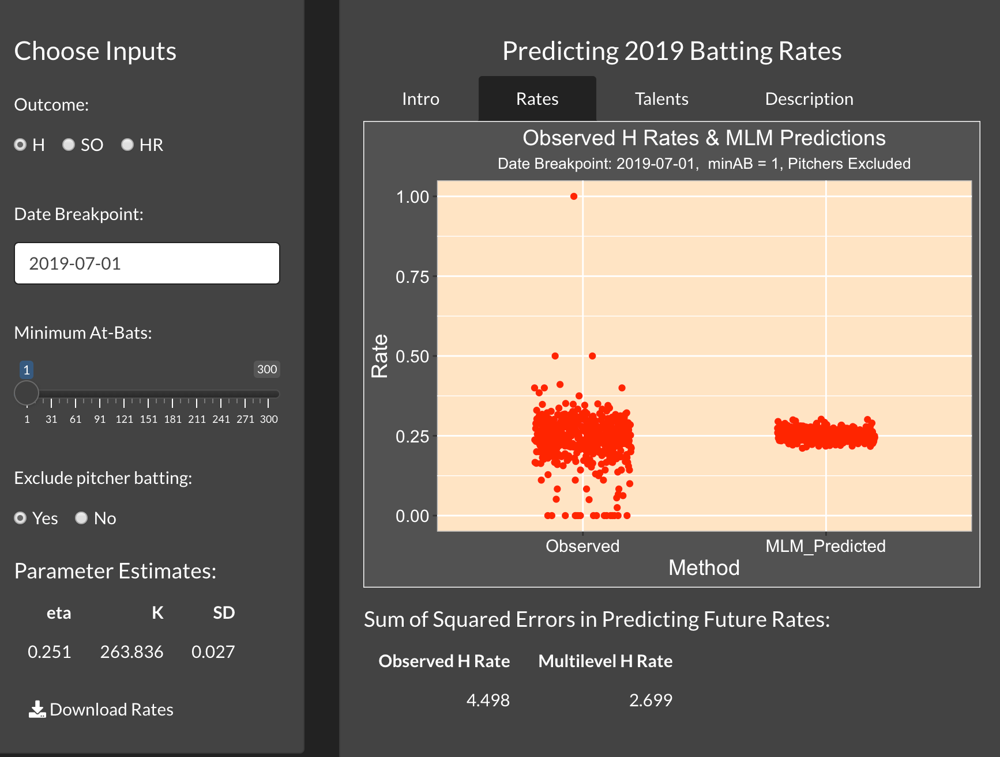
The Talents tab displays an estimate of the density of the rate probabilities for all players. We call this the estimated talent curve for the chosen group of players.
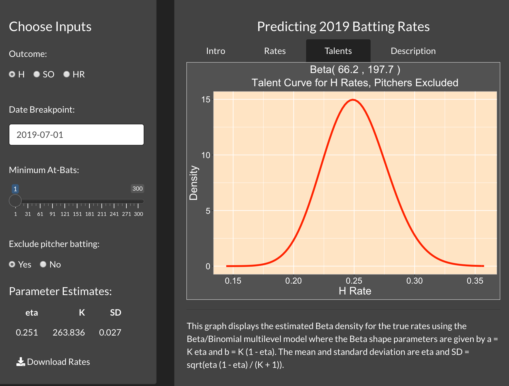
The Description tab provides more explanation for the multilevel modeling that is used in this application.
Things to Try
What happens if you don’t exclude the pitcher batting? How does that change the estimated values of K and eta? Can you explain the reason for the change?
In this exercise, we have focused on hit rates (batting averages). Try changing the Outcome to be SO or HR. What impact does that change have on the estimates of K and eta?
One can also change the date that divides the two parts of data. Try changing to an earlier data, say May 15, and see the effect of using a smaller amount of data in this prediction exercise.
Blog Post
Here’s a description of the use of the PredictingBattingRates app in this blog post:
https://baseballwithr.wordpress.com/2021/05/24/a-shiny-app-to-predict-batting-rates/
Similar Apps
The app PredictingBattingRatesPA is a similar app. The only difference is that it is using plate appearances (PA) as the denominator instead of at-bats (AB).
PredictiveHotHand
Introduction
This app illustrates predictive checking of a streaky measure for a Markov Switching model.
Assume y_1, ..., y_N are independent Bernoulli outcomes. For each game, the batter is either in a hot state with hitting probability p_H or a cold state with hitting probability p_C. The batter moves between the hot and cold states across games by a Markov Chain with staying probability 0.9. The probabilities p_C and p_H have independent beta priors.
The ofers are the at-bats between successes in the binary sequence.
We are interested in the predictive distribution of the maximum length of an ofer or the sum of squared ofer lengths among the Bernoulli outcomes.
Using the PredictiveHotHand App
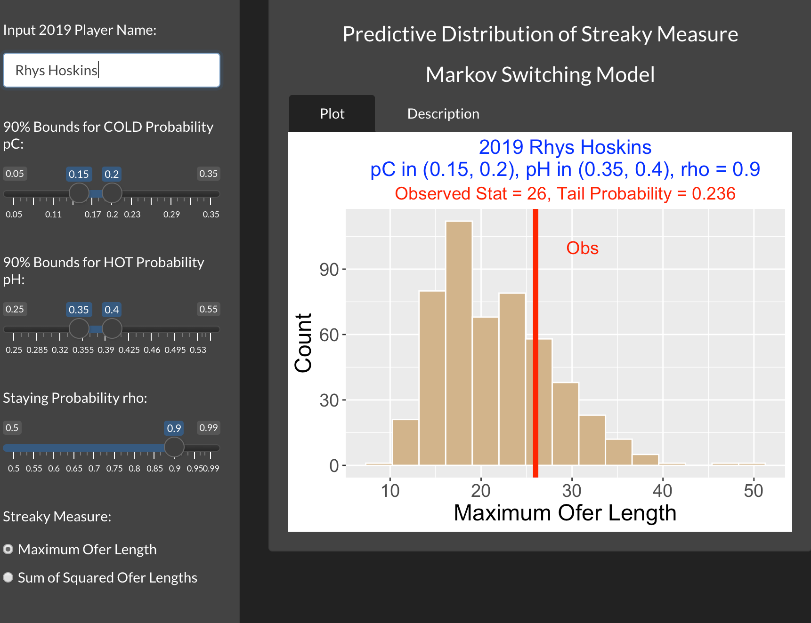
One inputs the name of the player of interest, the limits for 90% central probability intervals for the hitting probabilities p_H and p_C, and the value of the staying probability \rho. Also one inputs the type of streaky measure.
The histogram displays the simulated predictive distribution of the streaky measure. The observed value of the streaky measure is displayed as a vertical line. The tail probability is the probability that the predictive probability is at least as large as the observed value.
In this particular situation, we see that the observed streaky measure (the maximum ofer) is in the middle of the predictive distribution and the tail probability value is relatively large. So Hoskins’ streaky performance is consistent with this particular Markov Switching model.
Things to Try
Input the name of another hitter from the 2019 season who you believe may have had a streaky hitting performance. Vary the inputs including the specifications of the 90% intervals for the hot and cold probabilities and the choice of the streaky measure. On the basis of this work, is this player’s streaky performance consistent with the Markov Switching model?
Blog Post
I describe the use of this PredictiveHotHand app in the following post:
https://baseballwithr.wordpress.com/2021/07/26/predictive-checking-of-a-streaky-model/
PredictiveMaxOfer
Introduction
This app illustrates predictive checking of a streaky measure for a Beta/Bernoulli model.
Assume y_1, ..., y_N are independent Bernoulli outcomes with probability of success p. Assume p has a Beta distribution with shape parameters a and b.
The ofers are the at-bats between successes in the binary sequence.
Interested in the predictive distribution of the maximum length of an ofer or the sum of squared ofer lengths among the Bernoulli outcomes.
Using the PredictiveHotHand App
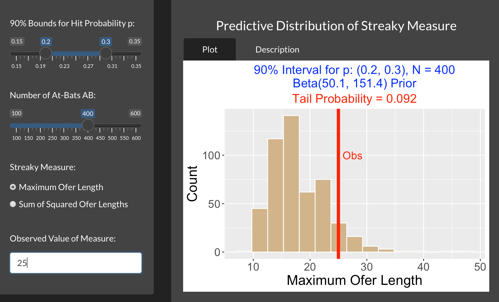
One inputs the limits for a 90 percent central probability interval for the hitting probability p. (The values of the beta shape parameters are found that match this input.) Also one inputs the number of at-bats N, the type of streaky measure, and the observed value of the streaky measure.
The histogram displays the simulated predictive distribution of the streaky measure. The observed value of the streaky measure is displayed as a vertical line. The tail probability is the probability that the predictive probability is at least as large as the observed value.
In our case our particular hitter has 300 at-bats and we are 90% confident that his true hitting probability falls between 0.2 and 0.3. We observe that his maximum ofer value is 25. Based on the histogram and tail probability, we see that his max ofer value is in the tail of the distribution suggesting that his streaky performance is not consistent with the beta-binomial model.
Things to Try
Find another hitter from who you believe may have had a streaky hitting performance in a particular season. Input the number of bats, the 90 percent probability interval for his hitting probability and the observed maximum ofer. On the basis of histogram and tail probability, is there evidence that his observed streakiness is inconsistent with the beta-binomial model?
Blog Post
A description of the use of PredictiveMaxOfer is given in the following post:
https://baseballwithr.wordpress.com/2021/07/19/extreme-ofers-predictive-checking-of-a-coin-flipping-model/
RadialChart
Introduction
This app illustrates the use of a Radial Chart to display the characteristics of balls in play for a specific pitcher.
Using the RadialChart App
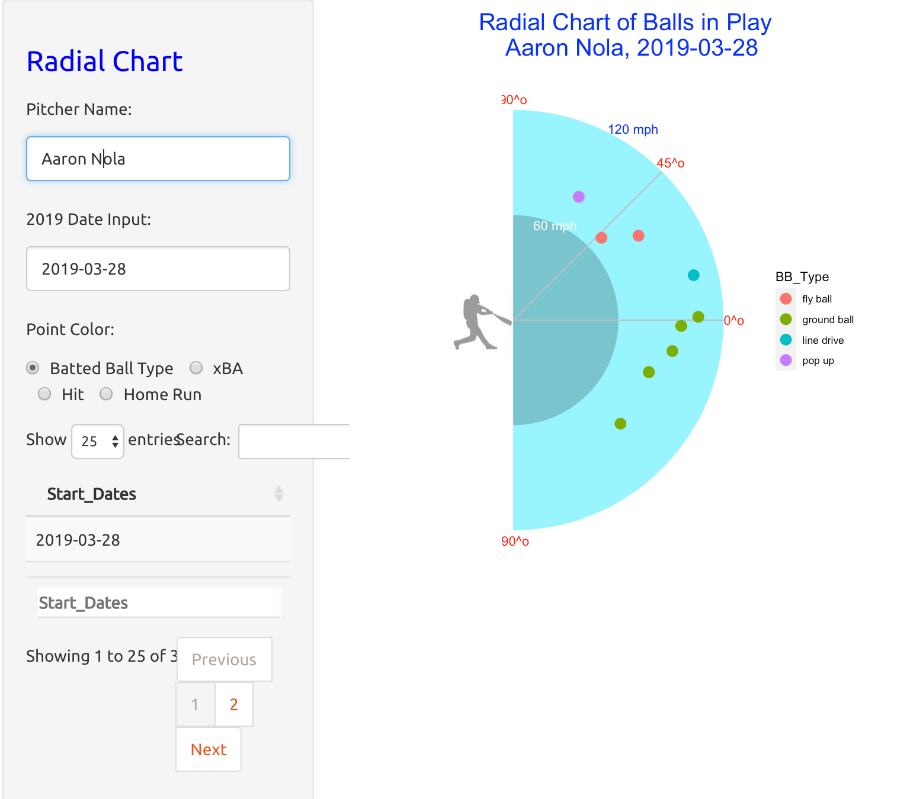
One inputs the name of a specific pitcher and a specific date when the pitcher pitched during the 2019 season. (A list of starting dates for the pitcher is displayed on the left side of the app.) One also indicates the metric used to color the point. In this example, we are considering pitches thrown by Aaron Nola on March 28, 2019 and we are coloring the points by the batted ball type.
The app displays a radial chart of the characteristics of the balls in play. The launch angle is represented by the angle from a horizontal line and the distance from the origin represents the launch speed. The color of the points represent the batted ball type – for example, the green points correspond to ground balls.
Blog Post
The following post describes the construction and use of the RadialChart app:
https://baseballwithr.wordpress.com/2021/04/12/constructing-a-radial-chart-using-ggplot2/
RunsExpectancy
Introduction
This app illustrates calculations associated with Runs Expectancy.
Using the RunsExpectancy App
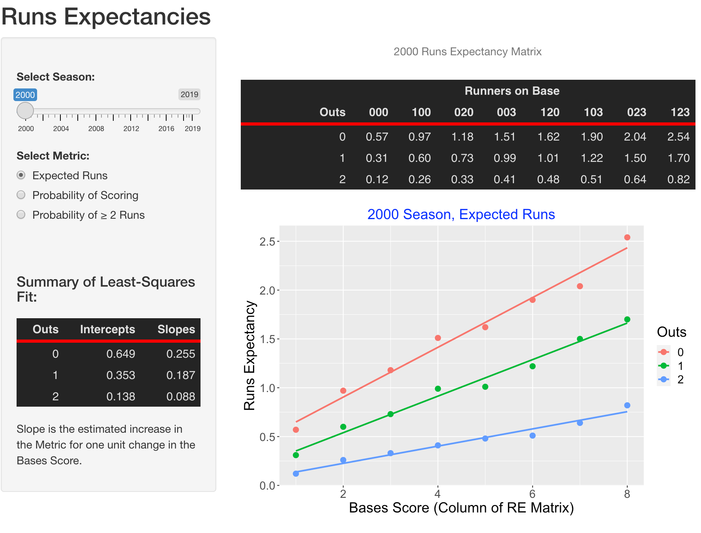
To use this app, one inputs the season and the metric of interest, either expected runs or probability of scoring or probability of scoring 2 or more runs. Here we are considering the 2000 season and choosing expected runs.
There are three displays:
The matrix in the upper-right section gives the expected runs in the remainder of the inning for each outs and runners on base situation.
The bottom graph graphs the expected runs as a function of the column number of the matrix. For each number of outs, a best-line fit is displayed.
The Summary of the Least-Squares Fit shows the fitted intercepts and slopes for each fitted line. For example, when there is no outs, the estimated runs in the remainder of the inning is 0.649 and one would estimate the expected runs to increase by 0.255 for each unit change in the “bases score”.
We can rerun this for a different season and different metric. For example, here is the 2019 season where the metric is the probability of scoring.
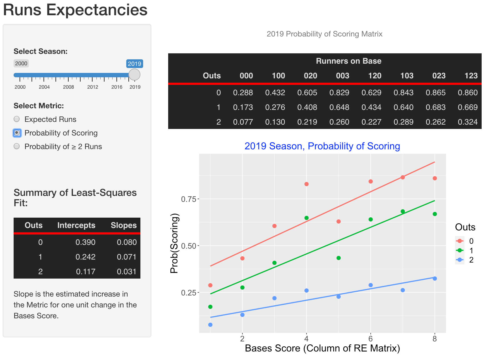
Blog Post
This app describes summarization of a runs expectancy matrix:
https://baseballwithr.wordpress.com/2020/12/21/summarizing-a-runs-expectancy-matrix/
SprayChart
Introduction
This app will plot the locations of in-play balls hit by a specific hitter.
Using the SprayChart App
There are two inputs to this app, the name of a 2019 hitter and the type of batted ball where the choices are all, fly ball, line drive, ground ball, and pop up.
The app produces a spray chart of the balls in play. If all batted balls are displayed, then the point colors correspond to batted ball type. In addition, there is a table of the batted ball distribution of the hitter.
Blog Post
The following post gives a description of the use of the SprayChart app:
https://baseballwithr.wordpress.com/2021/04/26/spray-charts-using-the-sportyr-package/
SprayCompare
Introduction
This app will plot the locations of in-play balls hit by two hitters.
Using the SprayCompare App
There are two inputs to this app, the names of two 2019 hitters and the type of batted ball where the choices are all, fly ball, line drive, ground ball, and pop up.
The app produces a comparison spray chart of the balls in play for the two hitters. If all batted balls are displayed, then the point colors correspond to batted ball type. In addition, there is a table of the batted ball distribution of the two hitters.
Blog Post
The following post gives a description of the use of the SprayChart app:
https://baseballwithr.wordpress.com/2021/04/26/spray-charts-using-the-sportyr-package/
StreakyAtBat
Introduction
This app provides different graphs to see the streaky behavior of a particular batter during a baseball season.
Using the StreakyAtBat App
To use this app, you first select a batter of interest from the 2021 season and the definition of a “success” (either Hit, Home Run, SO, or not SO).
The Moving Averages tab displays a moving average plot of the success rate where the slider can be used to choose the width of the moving averages.
The Geometric Plot tab displays a graph of the spacings, the number of failures between repeated successes. If the points follow a line, then the spacings follow a geometric distribution. Here there is substansive curvature indicating that Corey Seager is displaying some streaky batting behavior.
The Simulation tab implements a permutation test of the binary outcomes. One randomly mixes the 0 and 1 outcomes and computes the sum of squared spacings. One repeats this process many times and the histogram is a graph of the sum of squared spacings for these simulations. The observed sum of squared spacings is shown as a vertical line. The p-value is the probability of observing this statistic value or more extreme in the simulation. Since the p-value is small, this indicates that the player is truly streaky.
The Bayes Factor tab implements a Bayesian test of consistency. One has two models – the consistent model says that the outcomes come from a Bernoulli distribution with fixed probability p. The streaky model says that the probabilities are different and distributed according to a distribution parameterized by a hyperparameter K. The graph shows the log Bayes factor in support of the streaky model. Here the log Bayes factor is maxed at 1.07 which again indicates that the player is streaky.
StreakyInPlay
Introduction
This app displays moving averages of in-play batting data for any 2021 batter of interest. By use of a simulation, the app shows if the observed streakiness is greater than one may observe from a “chance” model.
Using the StreakyInPlay App
One inputs the batter player, the measure (either BA or wOBA) and the width for the moving average. These measures are estimated values of BA and wOBA based on the launch angle and exit velocity measurements.
The Observed tab displays a graph of the moving average against the in-play number. The shaded region shows the deviations of the moving average from the overall average. The BLUE statistic is the area of the shaded region and measures the streakiness of the hitting data.
The Simulation tab shows results of a simulation to assess the significance of the observed streakiness. One randomly permutes the measure values, finds all the moving averages, and computes the BLUE statistic. One repeats this exercise 500 times and collects the values of BLUE. A histogram of the BLUE values is shown. and the observed BLUE is shown as a vertical line. The tail probability is the probability the simulated BLUE is at least as large as the observed value. A small tail probablity indicates there is more streakiness in the data than one would anticipate by chance.

In this particular situation, we see that the observed streaky measure (the maximum ofer) is in the middle of the predictive distribution and the tail probability value is relatively large. So Hoskins’ streaky performance is consistent with this particular chance model.
Things to Try
Select another hitter from the 2019 season who you believe may have had a streaky hitting performance. Vary the inputs including the specifications of the batting measure and the width of the moving average. On the basis of this work, is this player’s streaky performance consistent with the chance model?
Blog Post
In this post, I give illustrations of the use of this StreakyInPlay app:
https://baseballwithr.wordpress.com/2021/11/30/statcast-streakiness-on-balls-in-play/
wOBA_Matchups
Introduction
This app graphs smoothed wOBA values of all batters that face a particular pitcher, or all pitchers that face a particular batter using Retrosheet play-by-play data from the 1960 through 2021 seasons.
Using the wOBA_Matchups App
First one decides if we are interested in matchups against a particular batter or a particular pitcher. Here we choose “Batter”. Then we choose a particular player of interest from the dropdown menu – here we choose HOF player Derek Jeter. Last, we decide on the graph to display, either Comparison or Multilevel.
If one chooses Comparison as the plot type, then one sees a graph of the raw wOBA and multilevel wOBA estimates plotted against the count of plate appearances (PA) for all pitchers who faced Derek Jeter during his career. Note that most pitchers faced Jeter for 50 or fewer plate appearances. It is clear that the multilevel estimates shrink the raw wOBA strongly towards an average value.
If one chooses Multilevel as the plot type, the graph displays smoothed wOBA values against the count of plate appearances (PA) for all pitchers who faced Jeter.
We are interested in finding pitchers who do unusually well or poorly against Jeter. One can brush over the scatterplot and the table displays the corresponding pitchers. Here we look at pitchers who faced Jeter at least 100 PA with the smallest wOBA estimates. The table indicates that Jeter struggled against Roy Halladay and James Shields with wOBA estimates of .329 and .341, respectively.
We can also look at all batters that faced a particular pitcher during his career. We choose matchups against “Pitcher”, select Roger Clemens from the dropdown menu, and choose Multilevel as the plot type.
There are several interesting insights from the graph displaying wOBA for all hitters against Clemens. First note that most hitters with at least 80 PA tended to have a higher-than-average wOBA value. Also there is one high outlier – by brushing over this point, we see that Jim Thome had the most successful performance against Clemens with a .412 smoothed wOBA value.
Blog Posts
See the following post for a general discussion of this batter-pitcher matchup data and a description of the smoothing method for batting averages.
https://baseballwithr.wordpress.com/2015/03/09/batter-pitcher-matchups/
This post describes smoothing of wOBA data and the use of the wOBA_Matchups app for several examples.
https://baseballwithr.wordpress.com/2022/02/14/who-hit-best-against-roger-clemens/